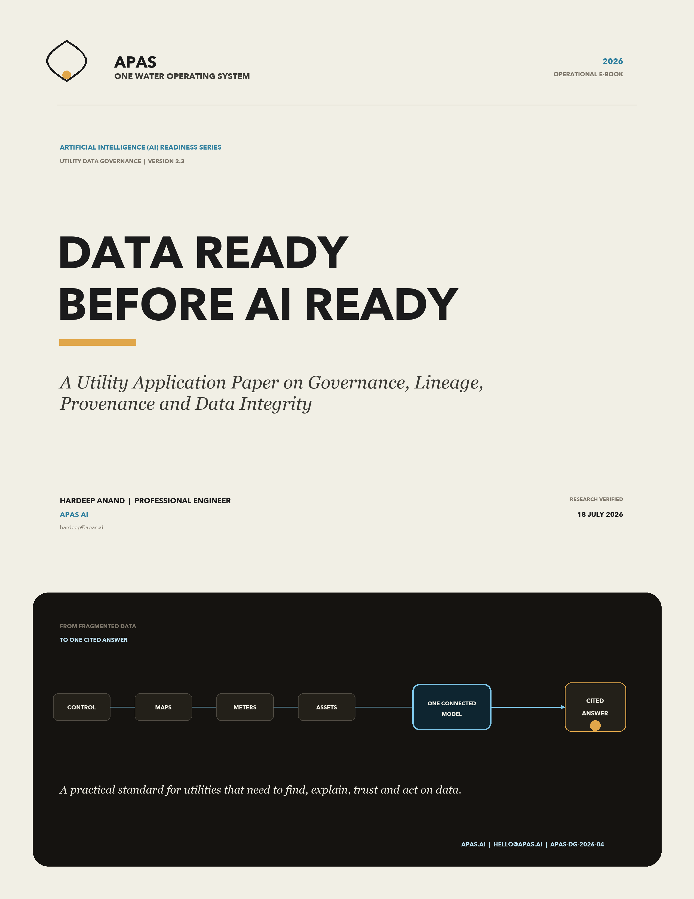
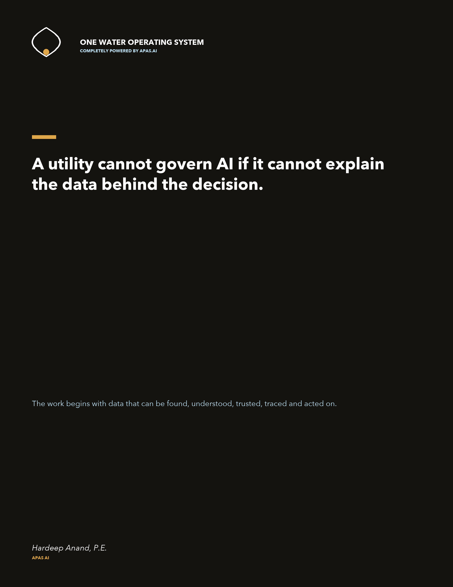
CONTENTS
A practitioner paper for utility leaders, data teams, operators, regulators and technology partners.
Product names: Pump Operating System (Pump OS), Pipe Operating System (Pipe OS) and Regulatory Operating System (Reg OS).
Foreword |
Why I wrote this |
4 |
Executive summary |
The decisions this paper supports |
5 |
Author |
Hardeep Anand, Professional Engineer (P.E.) |
6 |
1 |
Why utility data governance matters now |
7 |
2 |
The terms that matter |
10 |
3 |
How the standards fit together |
12 |
4 |
The utility operating model |
17 |
5 |
The assessment framework |
23 |
6 |
From finding to funded roadmap |
29 |
7 |
Government, law and policy |
31 |
8 |
Reference cases |
34 |
9 |
The commercial application |
36 |
10 |
The governance backbone for Pump OS, Pipe OS and Reg OS |
42 |
11 |
A practical 90-day start |
47 |
Closing |
The work is to make data usable and accountable |
49 |
Appendix A |
The 60 assessment criteria |
50 |
Appendix B |
Linked references and source register |
57 |
Appendix C |
Plain-language glossary |
63 |
Appendix D |
Validation protocol, worked example and release gates |
69 |
Research basis: 217 primary sources and 60 evidence-backed assessment criteria. Verified through 18 July 2026.
APPLICATION PAPER
Data governance has to leave the conference room and enter the work.
|
For 30 years, I have worked where public responsibility meets the physical reality of water. I have seen the work from the regulatory side and from the operator's chair. From both seats, the same truth keeps returning: a utility can own excellent systems and still struggle to explain which answer is authoritative, who accepted it and what evidence stands behind the decision.
That is why I wrote this paper. I did not want to add another abstract definition of data governance. I wanted to make the work operational. If we use the word One in One Water, we should be able to show what One means across control systems, assets, laboratories, models, customers, regulation and the decisions that connect them. If we say artificial intelligence (AI) governance or data governance, we should be able to name the person, the control, the evidence and the outcome.
The point A transaction closes a task. A transformation changes the way a utility decides, operates and learns. Our work should create transformational systems, not a larger collection of disconnected transactions. |
AI will change utility work. The harder question is whether utilities will prepare their data before placing more decisions on top of it. If the data cannot be found, joined, understood, traced and challenged, AI will not create transformation. It will automate uncertainty and make weak decisions move faster.
In critical infrastructure, this is not a minor technology problem. Data shapes service, safety, compliance, capital, customer and emergency decisions. When a serious incident occurs, people will ask what information was used, where it came from, who approved it and what warning was missed. The utility should be able to answer before the incident, not after it.
This paper joins the world of standards, provenance, controls, quality, privacy, cybersecurity and AI to the physical and public work of a utility. A standard becomes useful when it changes a handoff, a decision, a control or a result. Your data is part of your utility. Govern it with the same seriousness as the assets, money and public trust that depend on it.
ELECTRONIC PUBLICATION SIGNATURE
|
Hardeep Anand, P.E. Founder, APAS AI |
APPLICATION PAPER
Utilities do not need another governance slogan. They need an operating system for accountable data decisions.
|
The central finding is direct: a utility becomes AI-ready by becoming data-ready first. The work is not a technology cleanup exercise. It is the operating discipline that makes consequential decisions explainable, testable and improvable.
No single standard completes the job. The International Organization for Standardization (ISO) supplies governance direction. The World Wide Web Consortium (W3C) supplies portable provenance and data descriptions. The National Institute of Standards and Technology (NIST) and the International Electrotechnical Commission (IEC) supply control, risk and assurance methods. Law, regulation and utility context determine what must operate.
The utility is one decision system. Control, operational history, mapping, modeling, maintenance, laboratory, meter, customer, finance, regulatory and AI data must connect through shared identity, meaning, ownership, lineage, quality and rights.
A score without evidence is an opinion. Maturity, evidence confidence, consequence and urgency must remain visible. Progress is demonstrated by recurring operation, measured results, verified closure and better decisions over time.
Which source was authoritative for the material decision and why it was fit for that use.
How identity, time, units, location, version and quality survived each system handoff.
Who owned the data, who could change it and who accepted any exception or residual risk.
How the answer moved from physical source through transformation, model or spreadsheet to action and outcome.
What a regulator, auditor, operator, customer or incident team can review later.
Executive decision Treat data readiness as utility readiness. Fund it as an operating capability tied to service, safety, resilience, affordability, compliance and capital delivery. Do not leave it as a technology cleanup project. |
Build a governed evidence chain from the physical source to the public outcome, use it to locate the current maturity and twin phase, then improve the highest-consequence decisions first.
APPLICATION PAPER
Utility
leadership, regulatory accountability
and technology in one
operating perspective.
|
|
Portrait from the author's public LinkedIn profile |
Hardeep Anand, P.E. Founder, APAS AI | Professional Engineer | Utility and One Water leader |
Hardeep Anand, P.E., has spent three decades across utility operations, public works, regulatory compliance, capital delivery and One Water strategy. His perspective comes from both sides of accountability: the public agency that must set and enforce requirements, and the utility leader who must translate those requirements into reliable work at scale.
His public-service roles have included Director of One Water Strategy and Deputy Director of Capital Improvements and Regulatory Compliance at Miami-Dade Water and Sewer Department, as well as Public Works Director for the City of Fort Lauderdale. He founded One Water Academy, serves as founder and policy director of the Resilient Utility Coalition, and previously served on the board of The Water Research Foundation.
At APAS AI, he is building operating systems that connect fragmented utility data to the physical asset, the governing rule, the accountable person and the evidence behind the decision. The purpose is practical: help utilities see risk earlier, explain material answers clearly and prepare their data before placing more decisions on AI.
Author's operating principle The data was never separate from the utility. The systems and people were separated around it. The work is to reconnect the decision end to end. |
APPLICATION PAPER
The issue is not whether a utility has data. The issue is whether it can use the data with accountability.
|
Most utilities already own the source systems. They have supervisory control and data acquisition (SCADA), operational historians, a geographic information system (GIS), advanced metering infrastructure (AMI), customer and billing platforms, a computerized maintenance management system (CMMS) or enterprise asset management (EAM) platform, a laboratory information management system (LIMS), finance tools and many local spreadsheets. The weakness sits above and between them. The organization often cannot answer, quickly and consistently, what data exists, what it means, how it connects, who owns it and whether it is safe to use for a specific decision.
More data is not better data The volume of data created, captured, copied and consumed globally was estimated at 64.2 zettabytes in 2020, while a pre-2025 European Commission forecast placed 2025 at 175 zettabytes, nearly three times as much in five years. One zettabyte equals 1,000 exabytes, 1 million petabytes or 1 billion terabytes; the correct term is petabyte, not penderbyte. Yet quantity is not quality: without identity, context, ownership, lineage, controls and fitness for purpose, more data creates more noise, duplication and risk rather than better decisions. [DG01] [DG02] |
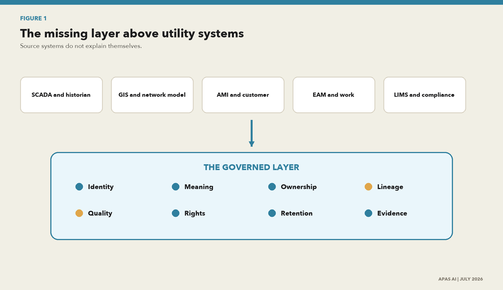
Figure 1. The missing layer above utility systems
What this shows. Utilities usually have the source systems. The gap is the governed layer that identifies data, states what it means, names who is accountable, records how it changed, and tells a user whether it is fit for a decision.
Source: APAS AI synthesis based on the standards and utility research in this paper.
A policy is part of governance, but it is not the whole of governance. Governance is visible when a utility can point to a decision right, a named owner, an operating control, a retained record and a way to correct failure. If any one of those parts is missing, the utility has a statement of intent, not a dependable capability.
A practical test Can a qualified new team member find, access, join and understand the data needed for a material decision without relying on one person who knows where everything is hidden? If the answer is no, the organization has knowledge risk and data risk at the same time. |
Decision area |
What weak governance looks like |
What good governance changes |
Operations |
Alarm, sensor or network data is used without time, unit, calibration or source context. |
The operator sees source, quality state, freshness, exception and the approved rule. |
Assets and capital |
GIS, drawings, EAM and field records disagree about the same asset. |
A governed identifier and version process connects the physical asset to the work and decision. |
Customer |
Interval use, estimates, corrections and eligibility decisions cannot be reconstructed. |
Purpose, source, estimation, approval, notice and correction evidence travel with the output. |
Regulatory |
A reported number is rebuilt through spreadsheets and personal knowledge. |
The filing traces to authoritative data, transformations, reconciliations and sign-off. |
AI and analytics |
A model is deployed before the data is shown to be suitable and representative. |
The use case has named accountability, data provenance, tests, limits, monitoring and retirement rules. |
AI can reduce effort, improve pattern detection and help people ask better questions. It can also create a faster mess. When a model draws from data that is late, incomplete, misjoined, mislabeled or outside its approved purpose, the error can travel farther than the original record ever could.
A utility should expect questions after any material failure: Which version was used? Which source was authoritative? Was the data fit for this use? Who approved the exception? What changed? Was the result challenged? The governance program should be designed to answer those questions as part of normal work.
APPLICATION PAPER
Clear terms prevent weak controls from hiding behind broad language.
|
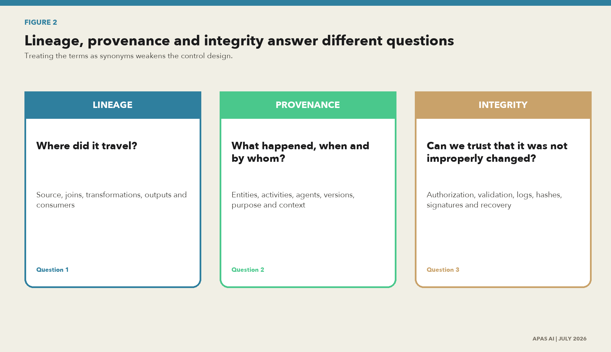
Figure 2. Lineage, provenance and integrity answer different questions
What this shows. Lineage shows the route. Provenance explains the history and responsibility. Integrity provides evidence that the data and its history were not altered outside the approved process.
Source: APAS AI synthesis of the W3C Provenance Data Model (PROV) and NIST control concepts.
Term |
Plain meaning |
Utility example |
Evidence to retain |
Data governance |
The decisions, responsibilities, controls and proof used to direct data work. |
The utility decides which network model is authoritative and who can approve a change. |
Charter, decision, owner, control result and review. |
Data management |
The work that creates, stores, protects, moves, improves and disposes of data. |
A data team validates AMI files, resolves exceptions and publishes a governed product. |
Run record, rule result, issue, version and service level. |
Lineage |
The route from source through transformation to use. |
A regulatory leakage value traces to sensors, work records, mappings and calculations. |
Source, job, input, output, version, time and consumer. |
Provenance |
The fuller history of the data, the activity and the responsible actor. |
A laboratory result records sample, method, instrument, analyst, approval and amendment. |
Entity, activity, agent, purpose, time, version and relationship. |
Integrity |
Confidence that data and evidence remain complete and protected from improper change. |
A control detects an unauthorized change to an approved reporting dataset. |
Authorization, validation, audit log, hash or signature, recovery test. |
Data quality |
Fitness for a stated use, not a claim that data is perfect. |
Fifteen-minute meter data may fit a customer trend but not a second-by-second control decision. |
Use, rule, threshold, result, exception and accepted limit. |
Traceability |
The ability to follow a requirement, record or decision backward and forward. |
A customer complaint connects to the bill, estimate, meter event, correction and notice. |
Linked identifiers and dated records across the chain. |
Data product |
A governed dataset, application programming interface (API) or feature set with an owner and service promise. |
A network-risk feature set used by capital planning and field operations. |
Contract, owner, schema, quality, lineage, rights and lifecycle. |
A useful provenance record does not need to be complicated. For a critical transformation, retain the input identifiers, output identifier, activity or run identifier, responsible person or service, time, code or configuration version, quality result, purpose, approval and integrity evidence. The W3C Provenance Data Model (PROV) provides the entity, activity and agent pattern for this work. OpenLineage provides a practical job, run and dataset pattern. [W01] [W02] [U06]
Fitness comes before score Do not ask whether a dataset is good. Ask whether it is fit for this decision, at this time, with this consequence. Record the answer and the accepted limits. |
Quality is contextual. A location that is adequate for customer communication may be unsafe for excavation. A meter interval that is adequate for billing analysis may not be adequate for operational control. A governance program should tie each quality requirement to the use, criticality and consequence. [I05] [I06] [I10] [W04]
APPLICATION PAPER
Use the standards as one control system. Do not force one source to answer every question.
|
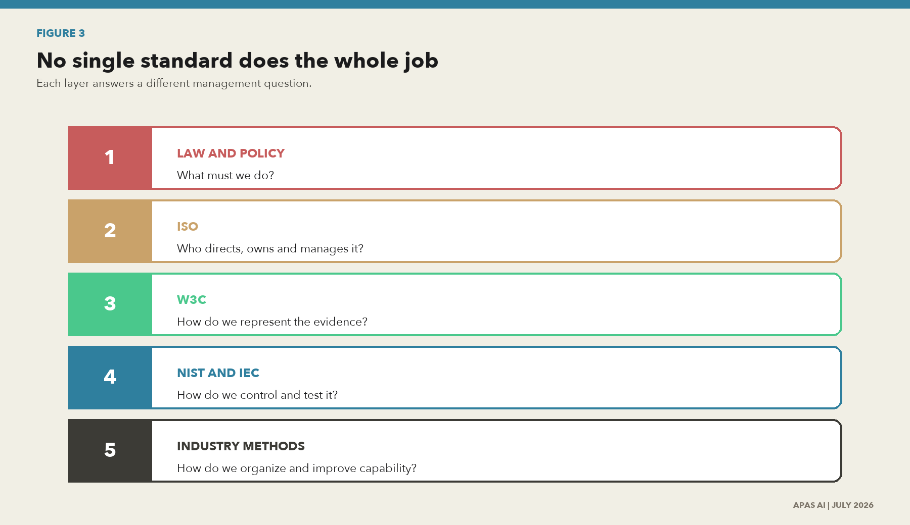
Figure 3. No single standard does the whole job
What this shows. Law and policy set obligations. ISO sets governance and management direction. W3C provides machine-readable evidence models. NIST and IEC provide control and assurance methods. Industry frameworks help organize capability.
Source: APAS AI standards crosswalk.
ISO/IEC 38505-1 sets principles for the governance of data. The ISO/IEC 5259 series brings data quality into analytics and machine learning (ML), including measures, management, process and governance. ISO/IEC 11179 supports metadata registries and dataset registration. ISO/IEC 42001 and ISO/IEC 23894 address AI management and risk. ISO/IEC 27001, ISO/IEC 27701 and ISO 15489 connect security, privacy, personally identifiable information (PII) and records. ISO 55001 and ISO 24516 connect the data work to assets and water utility performance. [I01] [I04-I08] [I14] [I16-I18] [I20-I26]
W3C PROV models provenance through entities, activities and agents. The Data Catalog Vocabulary (DCAT) describes catalogs and datasets. The Data Quality Vocabulary (DQV) expresses quality. The Shapes Constraint Language (SHACL) tests graph constraints. The Open Digital Rights Language (ODRL) expresses rights and duties. Verifiable Credentials Data Integrity adds cryptographic proof patterns. The Resource Description Framework (RDF), Simple Knowledge Organization System (SKOS) and JavaScript Object Notation for Linked Data (JSON-LD) support identifiers, relationships and shared meaning. These are technical building blocks for evidence that can move between systems. [W01-W11]
NIST does not publish one formal standard called data governance. Its contribution is spread across the Artificial Intelligence Risk Management Framework (AI RMF), the Research Data Framework, the provenance glossary, Special Publication (SP) 800-53 controls, SP 800-53A assessment procedures, the Cybersecurity Framework, the Privacy Framework, supply-chain guidance and the Open Security Controls Assessment Language (OSCAL). Together, these sources help a utility define risk, select controls, test them and exchange assurance information. [N01-N10]
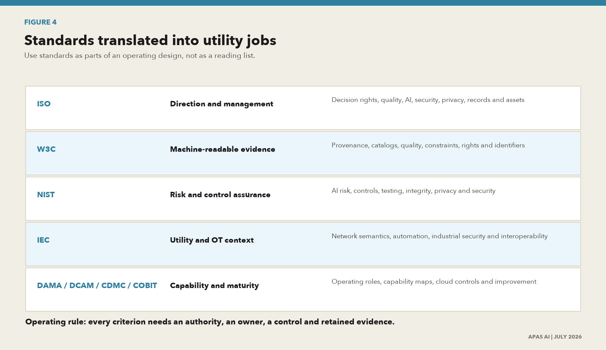
Figure 4. Standards translated into utility jobs
What this shows. The useful question is not which standard wins. The useful question is which operating job each source helps a utility perform and what evidence should remain after the job is done.
Source: APAS AI standards crosswalk.
Family |
Primary job |
Utility use |
Do not mistake it for |
Law and government policy |
Set duties, coverage, rights, dates and enforcement. |
Applicability, records, privacy, cyber, open data, AI and procurement. |
A full operating model. |
ISO |
Set direction, accountabilities and management-system expectations. |
Governance, quality, AI, security, privacy, records and asset management. |
A machine-readable lineage format. |
W3C |
Represent and exchange metadata, provenance, quality, constraints and policy. |
Catalogs, knowledge graphs, APIs, data products and traceable evidence. |
A legal requirement or complete control program. |
NIST |
Organize risk, controls, tests, evidence and improvement. |
AI, cyber, privacy, integrity, suppliers, logging and assurance. |
An ISO management-system certification. |
IEC and utility standards |
Provide operational technology (OT), power and interoperability context. |
SCADA, substations, industrial security, network models and field systems. |
Enterprise data governance by itself. |
Data Management Association International (DAMA), Data Management Capability Assessment Model (DCAM), Cloud Data Management Capabilities (CDMC) and Control Objectives for Information and Related Technologies (COBIT) |
Organize capability, maturity and management practice. |
Roles, workstreams, cloud controls, investment and improvement. |
Binding law or technical evidence syntax. |
ID |
Issuer |
Source |
Status |
Operating use |
I01 |
ISO/IEC |
ISO/IEC 38505-1:2017 - Governance of data, Part 1 |
Published; confirmed 2022 |
Governing-body principles and decision rights |
I03 |
ISO/IEC |
ISO/IEC TS 38505-3:2021 - Governance of data, Part 3: Data classification |
Published |
Classification decisions and accountable use |
I04 |
ISO/IEC |
ISO/IEC 5259-1:2024 - Data quality for analytics and ML: overview |
Published |
AI/analytics data-quality vocabulary and examples |
I05 |
ISO/IEC |
ISO/IEC 5259-2:2024 - Data quality measures |
Published |
Measurable quality characteristics |
I06 |
ISO/IEC |
ISO/IEC 5259-3:2024 - Data quality management requirements and guidelines |
Published |
Auditable data-quality management system |
I07 |
ISO/IEC |
ISO/IEC 5259-4:2024 - Data quality process framework |
Published |
Operational process framework |
I08 |
ISO/IEC |
ISO/IEC 5259-5:2025 - Data quality governance framework |
Published |
Governing-body oversight of analytics/ML data quality |
I14 |
ISO/IEC |
ISO/IEC 11179-1:2023 - Metadata registries framework |
Published |
Metadata registry foundation |
I16 |
ISO/IEC |
ISO/IEC 11179-33:2023 - Dataset registration metamodel |
Published |
Dataset provenance, quality, fitness and risk metadata |
I17 |
ISO/IEC |
ISO/IEC 42001:2023 - AI management system |
Published |
Responsible AI governance, traceability and continual improvement |
I18 |
ISO/IEC |
ISO/IEC 23894:2023 - AI risk management guidance |
Published |
AI risk process and integration |
I20 |
ISO/IEC |
ISO/IEC 27001:2022 - Information security management system |
Published; amended 2024 |
Confidentiality, integrity, availability and risk management |
I21 |
ISO/IEC |
ISO/IEC 27701:2025 - Privacy information management system |
Published |
PII controller/processor accountability and proof |
I22 |
ISO |
ISO 15489-1:2016 - Records management concepts and principles |
Published; confirmed 2021 |
Authentic, reliable records and lifecycle controls |
I23 |
ISO |
ISO 55001:2024 - Asset management system requirements |
Published |
Asset lifecycle, value, risk and decision-making |
W01 |
W3C |
PROV-O: The PROV Ontology |
Recommendation |
Machine-readable provenance entities, activities and agents |
W02 |
W3C |
PROV Overview |
Working Group Note |
PROV-DM, PROV-N, PROV-O, constraints and access |
W03 |
W3C |
Data Catalog Vocabulary (DCAT) 3 |
Recommendation; 2024 |
Dataset catalog, version, checksum and distribution metadata |
W04 |
W3C |
Data Quality Vocabulary (DQV) |
Working Group Note |
Quality measurements, policies and annotations |
W05 |
W3C |
Data on the Web Best Practices |
Recommendation |
Publication, metadata, provenance, quality and reuse practices |
W06 |
W3C |
Shapes Constraint Language (SHACL) |
Recommendation |
Machine-executable validation of graph data |
W07 |
W3C |
ODRL Information Model 2.2 |
Recommendation |
Permissions, prohibitions, duties and data-use policy |
W09 |
W3C |
Verifiable Credential Data Integrity 1.0 |
Recommendation |
Proofs for authenticity and integrity |
W10 |
W3C |
RDF 1.1 Concepts and Abstract Syntax |
Recommendation |
Graph data model and identifiers |
W11 |
W3C |
SKOS Simple Knowledge Organization System |
Recommendation |
Controlled vocabularies and concept schemes |
N01 |
NIST |
AI Risk Management Framework 1.0 |
Current baseline; revision underway in 2026 |
Govern, Map, Measure and Manage AI risk |
N02 |
NIST |
Research Data Framework (RDaF), SP 1500-18r2 |
Final |
Research data lifecycle, provenance, integrity and reproducibility |
N03 |
NIST |
CSRC glossary: provenance |
Current glossary entry |
Origin, development, ownership, location and changes |
N04 |
NIST |
SP 800-53 Rev. 5, Release 5.2.0 |
Final; August 2025 release |
Audit, configuration, integrity, privacy and supply-chain controls |
N05 |
NIST |
SP 800-53A Rev. 5 |
Final |
Test methods and evidence for SP 800-53 controls |
N06 |
NIST |
Cybersecurity Framework 2.0 |
Final |
Govern, Identify, Protect, Detect, Respond, Recover |
N07 |
NIST |
Privacy Framework 1.0 / 1.1 initial public draft |
1.0 final; 1.1 draft |
Enterprise privacy-risk management |
N09 |
NIST |
SP 800-161 Rev. 1 - Cybersecurity supply-chain risk management |
Final |
Third-party and supply-chain evidence |
N10 |
NIST |
OSCAL - Open Security Controls Assessment Language |
Active program |
Machine-readable control catalogs, profiles and assessment results |
U01 |
IEC |
IEC 61968-11:2013 - Common Information Model for distribution |
Published |
Enterprise integration and distribution-system semantics |
U03 |
IEC |
IEC 61850 family - Power utility automation |
Published / evolving series |
Substation and power-system data models and communication |
U04 |
IEC |
IEC 62443-2-1:2024 - IACS security program requirements |
Published |
Asset-owner governance for industrial automation and control systems |
U06 |
OpenLineage |
OpenLineage specification |
Active open standard |
Run, job, dataset and facet events for operational lineage |
U08 |
EPA |
America's Water Infrastructure Act: risk and resilience |
Statutory program |
Risk/resilience assessments and emergency response plans |
U11 |
Ofgem |
Data Best Practice guidance |
Published 17 Nov 2025 |
Energy-system data sharing, interoperability and licence expectations |
F01 |
DAMA International |
DAMA-DMBOK2 Revised |
Current; DMBOK 3.0 in development |
Enterprise data-management capabilities and roles |
F02 |
EDM Council |
DCAM v3 |
Announced June 2025 |
Data-management and analytics capability assessment |
F03 |
EDM Council |
Cloud Data Management Capabilities (CDMC) |
Version 1.1 |
Fourteen auditable cloud data controls |
F04 |
ISACA |
COBIT 2019 |
Current |
Enterprise governance of information and technology |
F05 |
GO FAIR |
FAIR Guiding Principles |
Current principles |
Findable, Accessible, Interoperable and Reusable data |
Licensing note ISO and IEC standards are often licensed publications. This paper identifies the standards and translates their operating role. An implementation team should obtain the licensed text and confirm the edition before claiming conformance or certification. |
APPLICATION PAPER
Govern the physical decision chain, not only the information technology estate.
|
Information technology (IT) manages business and information services. OT monitors or controls the physical process. Utility governance must connect both because a material decision often begins in physical equipment and ends in a business, customer or regulatory record.
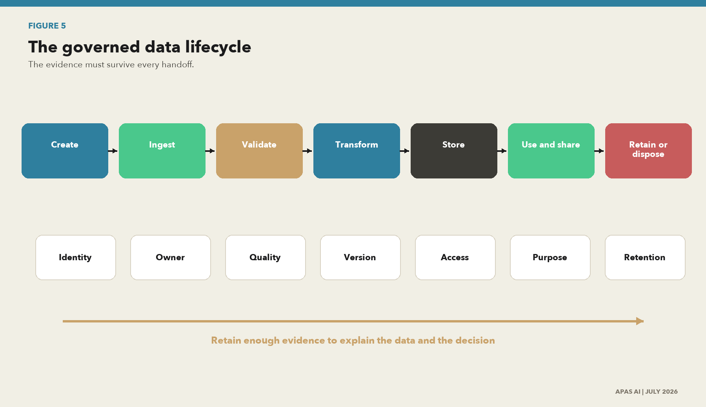
Figure 5. The governed data lifecycle
What this shows. Governance must stay with the data from creation through use and disposal. Every handoff needs identity, responsibility, quality, change, access, purpose and retention evidence.
Source: APAS AI synthesis of ISO, W3C, NIST and records-management sources.
At each lifecycle stage, the utility should retain enough evidence to answer seven questions: What is it? Who is accountable? What changed? Is it fit for this use? Who can access it? Why is it being used? How long should it remain? The answers do not have to live in one tool, but they must connect through stable identifiers.
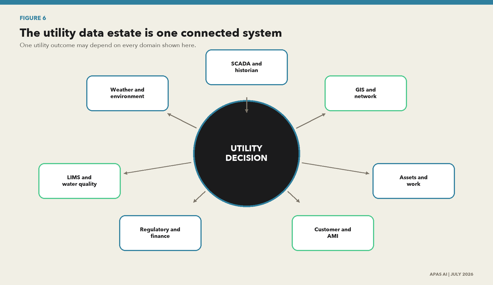
Figure 6. The utility data estate is one connected system
What this shows. Operational, asset, laboratory, customer, work, regulatory and AI data depend on common identifiers and controlled handoffs. Governing only the enterprise warehouse leaves the most consequential utility decisions outside the program.
Source: APAS AI utility operating model.
The systems do not need to become one platform. They do need to agree on the identity of the asset, event, obligation and decision. Stable identifiers allow a person to move from a physical condition to the supporting record without rebuilding the story by hand.
An asset identifier connects the geographic information system, maintenance record, telemetry tag and engineering model to the same physical thing.
Event identifiers and trusted time connect an alarm, sample, customer impact, work response and operating outcome.
Rule and obligation identifiers connect a permit limit or operating rule to the calculation, approval, filing and corrective action it governs.
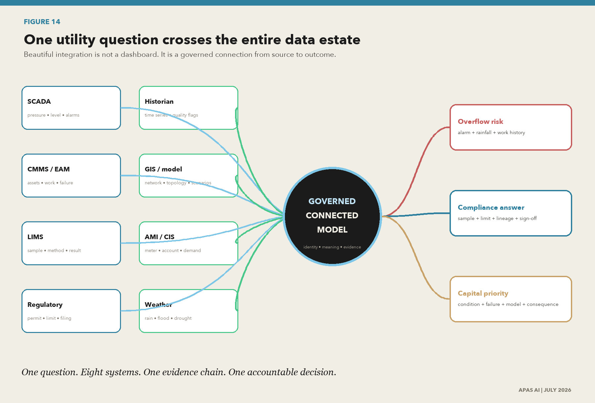
Figure 14. One utility question crosses the entire data estate
What this shows. An overflow-risk, water-quality, compliance or capital question rarely belongs to one system. It depends on controlled connections among SCADA, the historian, GIS, hydraulic models, CMMS or EAM, LIMS, customer systems, weather and regulatory records.
Source: APAS AI utility decision-chain model.
Utility decision |
Systems that must connect |
Governed outcome |
Wet-weather overflow response |
SCADA levels and alarms; historian time series; rainfall; GIS collection model; CMMS pump condition and work; fats, oils and grease (FOG) inspections; permit and consent requirements. |
A cited risk signal, operator decision, response record and regulatory evidence chain. |
Drinking-water quality release |
LIMS sample and method; instrument calibration and maintenance; SCADA treatment conditions; historian trends; laboratory approval; distribution model; regulatory limits. |
A defensible release or escalation decision with custody, method, condition, approval and exception evidence. |
Capital renewal priority |
GIS asset identity; CMMS or EAM failure and work history; hydraulic or process model; AMI demand; customer impact; climate stress; cost and regulatory commitments. |
A ranked investment decision that can be traced from physical condition and modeled consequence to funding. |
Customer leak or billing correction |
AMI interval data; meter events; customer information system (CIS) account and billing; GIS service location; field work order; estimation rule; notice and correction history. |
A fair, reconstructable customer outcome with purpose, source, estimate, review and redress. |
The fragmentation tax When these systems do not share identifiers, time, meaning and evidence, staff rebuild the truth by hand. The delay is expensive; the inconsistency is a governance risk; and the resulting AI learns the fragmentation rather than resolving it. |
Domain |
Typical systems |
Minimum evidence |
Network and assets |
GIS, network model, EAM, CMMS, drawings and condition records. |
Asset and location ID, version, as-built state, criticality and owner. |
Operations and telemetry |
SCADA, historian, alarms, controls, AMI and IoT. |
Sensor identity, time, unit, quality flag, calibration and communication state. |
Water and product quality |
LIMS, sample, method, instrument and laboratory result. |
Sample, site and method IDs, detection limit, custody, approval and amendment history. |
Customer and usage |
Account, meter, interval use, contact, assistance and billing. |
Purpose, privacy, meter-account link, estimate, correction, notice and retention. |
Work and field |
Work order, inspection, image, crew, material and completion. |
Asset link, actor, time, mobile sync, evidence and approval. |
Environment and climate |
Weather, flood, drought, discharge, catchment and emissions. |
Source rights, location, time, resolution, scenario, version and quality. |
Regulatory and finance |
Performance return, tariff, incident, capital and board reporting. |
Authoritative source, lineage, period, reconciliation and sign-off. |
Analytics and AI |
Features, training and evaluation data, model input, output, prompt and context. |
Use case, source rights, version, provenance, suitability, limits and monitoring. |
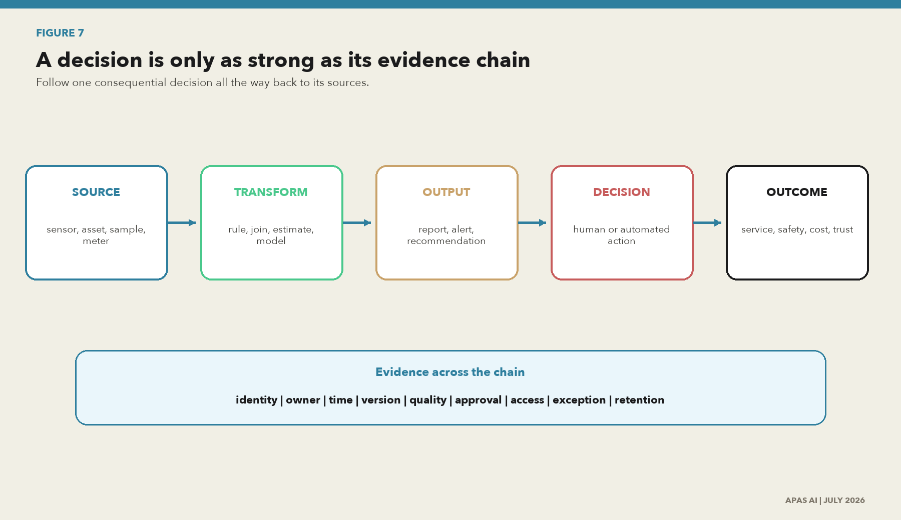
Figure 7. A decision is only as strong as its evidence chain
What this shows. A utility should be able to trace a material decision back through the report or model, each transformation, the authoritative source, the accountable people and the control results.
Source: APAS AI evidence-chain method.
The fastest way to test governance is to follow one consequential output. Select a regulatory filing, an operational alert, a customer outcome, a capital recommendation or an AI-supported decision. Trace it backward through every transformation to the authoritative source. Then trace it forward to the action, outcome, issue and correction.
Seat |
Accountability |
Proof |
Governing body and executive |
Set direction, appetite, investment and material risk decisions. |
Charter, decision log, performance and risk review. |
Data office |
Design standards, catalog, quality, lineage, stewardship and portfolio. |
Coverage, rules, issues, council decisions and roadmap. |
Domain owner |
Accept accountability for purpose, quality, access, lifecycle and value. |
Data product approval, service level and risk acceptance. |
Data steward |
Maintain meaning, metadata, rules, issues and consumer communication. |
Catalog completeness, rule results and issue closure. |
Operations and asset owner |
Ensure operational fitness, safety, timing, configuration and recovery. |
Calibration, reconciliation, change and exercise evidence. |
CIO, CISO and architecture |
Provide platforms, access, protection, resilience and integration. |
Architecture, access, logs, recovery and supplier assurance. |
Legal, privacy and records |
Confirm authority, rights, contracts, notice, holds, retention and transfer. |
Assessment, clause, schedule, notice and approval. |
AI and analytics owner |
Own use-case risk, data suitability, evaluation, monitoring and retirement. |
Data and model records, tests, limits and monitoring. |
Independent assurance |
Challenge design and test operation without owning remediation. |
Plan, sample, finding, opinion and closure validation. |
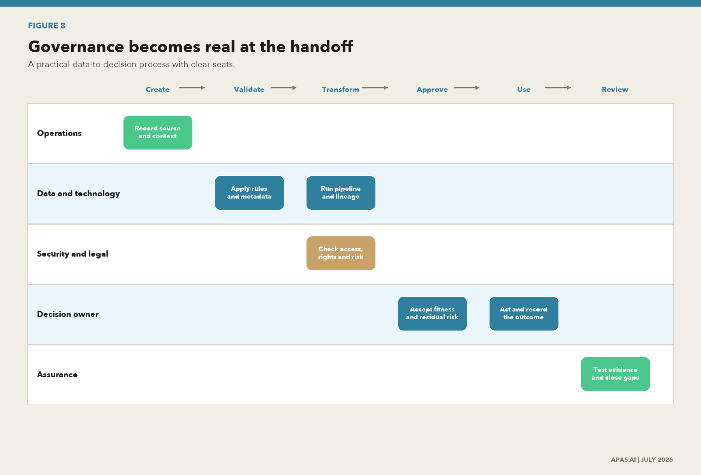
Figure 8. Governance becomes real at the handoff
What this shows. This swimlane places the work with the people who already run the utility. It shows where ownership, validation, approval, security, legal review and assurance enter the same data flow.
Source: APAS AI utility governance swimlane.
The handoff rule A handoff is governed when the next person or system receives the data, its meaning, its quality state, its approved purpose and the evidence needed to challenge it. |
APPLICATION PAPER
Measure what is operating, what is proven and what matters most.
|
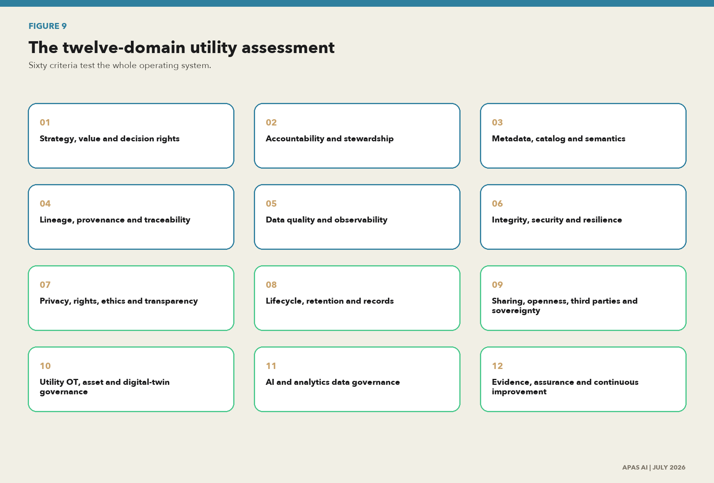
Figure 9. The twelve-domain utility assessment
What this shows. The assessment covers governance, data work, utility operations, AI, security, rights and assurance as one system. It prevents a strong score in documentation from hiding weak operational evidence.
Source: APAS AI assessment model based on 60 evidence-backed criteria.
ID |
Domain |
What it tests |
Primary anchors |
D01 |
Strategy, value and decision rights |
Governance scope, value outcomes, risk appetite, funding and decision escalation |
I01,I08,F02,F04,US06 |
D02 |
Accountability and stewardship |
Named owners/stewards/custodians, councils, segregation of duties and competence |
I01,I02,F01,N04 |
D03 |
Metadata, catalog and semantics |
Inventory, authoritative identifiers, business/technical metadata, terminology and interoperability |
I14,I15,I16,W03,W10,W11,U01 |
D04 |
Lineage, provenance and traceability |
Source-to-use paths, transformations, actors, versions, run events and reproducibility |
W01,W02,U06,N02,N03,I16 |
D05 |
Data quality and observability |
Fitness-for-purpose requirements, controls, measurement, issue handling and monitoring |
I04,I05,I06,I07,I10,I11,I12,W04 |
D06 |
Integrity, security and resilience |
Access, change control, logging, cryptographic proof, recovery, OT separation and incident response |
I20,N04,N05,N06,U04,U07,U08 |
D07 |
Privacy, rights, ethics and transparency |
Purpose, minimization, rights, impact assessment, fairness, explainability and redress |
I21,N07,F06,F07,EU01,EU04 |
D08 |
Lifecycle, retention and records |
Creation, version, legal hold, archival, retention, deletion and authentic records |
I22,N04,US09,EU03 |
D09 |
Sharing, openness, third parties and sovereignty |
Data-use rights, contracts, classification, open/shared/closed decisions and cross-border controls |
W03,W05,W07,N09,EU02,EU03,G14 |
D10 |
Utility OT, asset and digital-twin governance |
SCADA/AMI/GIS/EAM/LIMS integration, critical assets, network models and operational safety |
I23,I24,I25,I26,U01,U03,U04,U08,U11 |
D11 |
AI and analytics data governance |
Use-case inventory, training/evaluation data, representativeness, traceability, monitoring and retirement |
I04,I05,I08,I17,I18,I19,N01,US03,EU01 |
D12 |
Evidence, assurance and continuous improvement |
Control tests, independent challenge, metrics, exceptions, source updates and remediation verification |
N05,I13,I17,F03,N10 |
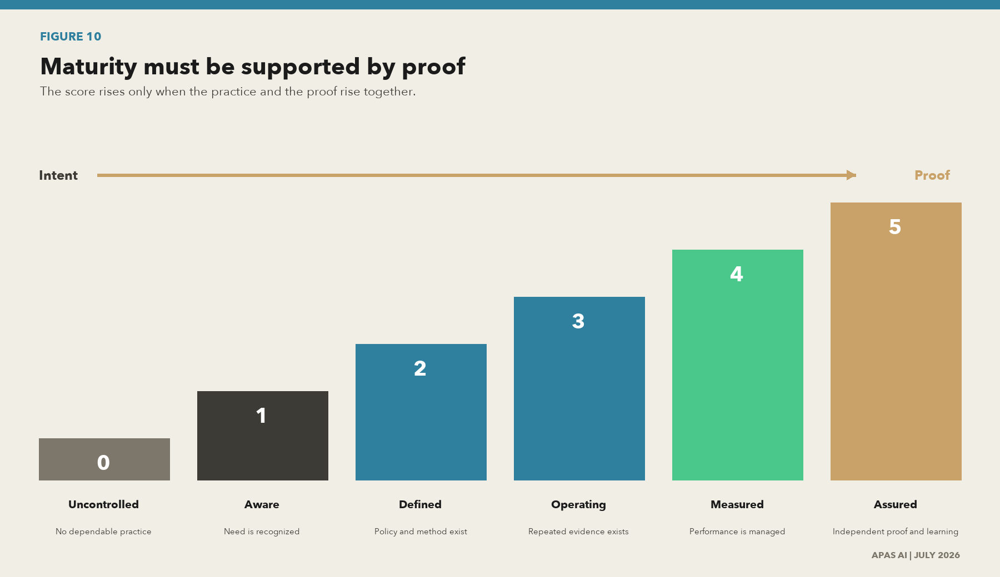
Figure 10. Maturity must be supported by proof
What this shows. A policy can establish intent, but it cannot prove operation. Scores rise only when the utility can show repeatable practice, measured results and independent assurance.
Source: APAS AI maturity and evidence-confidence model.
Level |
Name |
Meaning |
Minimum proof |
0 |
Uncontrolled |
The practice is absent, unknown or unreliable. |
No dependable proof. |
1 |
Aware |
People recognize the need, but work is local or reactive. |
Examples or statements, not a controlled method. |
2 |
Defined |
A policy, role or method is approved. |
Current document, owner and planned process. |
3 |
Operating |
The practice is repeated in scope and exceptions are managed. |
Operating samples over time. |
4 |
Measured |
Performance, coverage and control results are managed. |
Metrics, trends, thresholds and corrective action. |
5 |
Assured |
Independent testing and learning sustain the practice. |
Independent evidence, verified closure and adaptation. |
Data does not become wisdom simply because it is collected, integrated or analyzed. The value journey begins in data chaos, where records are fragmented and their meaning is uncertain, then moves through governed data, information, knowledge and decision intelligence. Data wisdom is the accountable use of that evidence, combined with operational context, human judgment, consequences and learning; it is an organizational capability, not a database state.
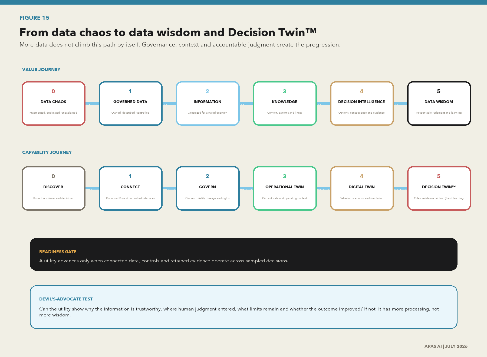
Figure 15. From data chaos to data wisdom and Decision Twin™
What this shows. The value journey turns fragmented records into governed data, usable information, contextual knowledge, decision intelligence and accountable data wisdom. The capability journey begins with discovery and governed connection, supports dependable digital twins, and reaches Decision Twin™ only when rules, evidence, human authority and outcome learning operate together.
Source: APAS AI data-value and maturity model. Decision Twin™ is an APAS trademark.
Phase |
What the data can prove |
Decision value |
0. Discover |
Material decisions, source systems, owners and critical gaps are known. |
The utility knows where uncertainty and dependency live. |
1. Connect |
Stable identifiers and controlled interfaces connect selected systems and records. |
People can find the same asset, event, customer, sample or rule across systems. |
2. Govern |
Meaning, quality, ownership, lineage, rights, retention and exceptions operate. |
The utility can explain why data is fit for a stated decision. |
3. Operational Twin |
Current physical state is joined to asset, work, environmental and operator context. |
Teams see the operating condition and act with shared context. |
4. Digital Twin |
The representation can reproduce behavior, test scenarios and compare observed with expected state. |
Engineers and operators can simulate consequences before acting. |
5. Decision Twin™ |
The twin connects the model to rules, evidence, accountable authority, alternatives, action and outcome learning. |
The utility can explain not only what may happen, but why a decision is permitted, supported and improvable. |
Trademark note Decision Twin™ is an APAS trademark. The term describes a governed decision model that connects operational state, analytical models, rules, evidence, human authority and outcome learning. |
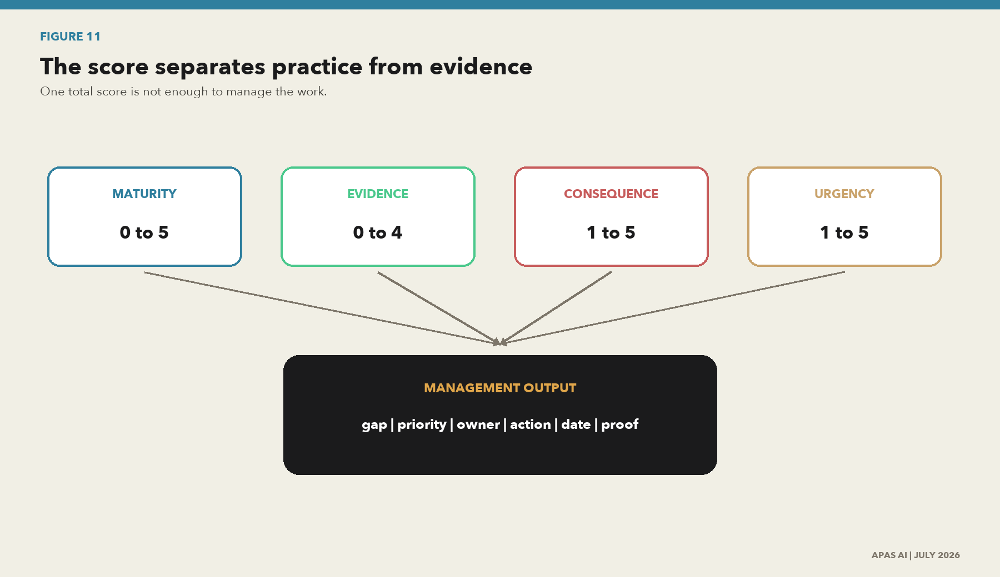
Figure 11. The score separates practice from evidence
What this shows. The method records maturity, confidence in the evidence, consequence and urgency separately. That makes the result useful for management instead of turning it into one unexplained number.
Source: APAS AI assessment scoring method.
A key performance indicator (KPI) shows whether a service, control or product is producing the intended result. The assessment keeps those outcome measures separate from the maturity score so activity is not mistaken for value.
Measure |
Scale |
Rule |
Maturity |
0 to 5 |
Record the level of repeatable operating practice. |
Evidence confidence |
0 to 4 |
0 absent, 1 asserted, 2 documented, 3 operating sample, 4 independently verified. |
Adjusted score |
0 to 5 |
Maturity multiplied by evidence confidence divided by 4. Exclude not-applicable criteria. |
Consequence |
1 to 5 |
Rate service, safety, customer, regulatory, financial and trust impact. |
Urgency |
1 to 5 |
Rate deadline, incident, audit, project and dependency pressure. |
Priority |
Relative |
Combine the target gap, consequence, exposure and urgency. Keep the factors visible. |
Score protection A criterion cannot score above Level 2 without recurring operating evidence. Independent assurance raises confidence in the proof. It does not raise maturity when the underlying practice is weak. |
Governance charter, policy hierarchy, delegations and recent decisions.
System, data and interface inventory with ownership, criticality and jurisdiction.
Architecture and flows for SCADA, AMI, GIS, EAM, LIMS, customer, cloud and AI.
Lineage and provenance for sampled reports, decisions, customer outputs and AI use cases.
Quality rules, results, exceptions, reconciliations, issues and root-cause records.
Access, change and audit logs, recovery tests, incidents and supplier assurance.
Privacy, AI and transfer assessments, use-case inventories, retention and sharing agreements.
Performance reports, internal audit, certification scope, regulatory findings and closure evidence.
Sample |
Why it matters |
Operational safety or reliability decision |
Tests OT identity, time, quality, configuration and operator context. |
Regulatory or board report |
Tests authoritative source, transformation, reconciliation and sign-off. |
Customer bill, alert or eligibility output |
Tests personal data, estimates, correction, notice and redress. |
Open or shared data product |
Tests benefit-risk classification, rights, quality statement and consumer terms. |
AI or analytics use case |
Tests source rights, suitability, representativeness, evaluation, limits and monitoring. |
Supplier or cloud data flow |
Tests contract, location, access, assurance, lineage and exit. |
APPLICATION PAPER
An assessment is useful only when it changes ownership, sequence and delivery.
|
Frame the decisions. Confirm service outcomes, material risks, regulatory commitments, projects and AI use cases that make the work necessary.
Map the estate. Identify systems, interfaces, physical assets, critical data, owners, suppliers, jurisdictions and current programs.
Test the evidence. Review documents, interview by seat and trace selected decisions from source to outcome.
Score and challenge. Record maturity, evidence confidence, consequence, urgency, legal applicability and competing views.
Design the target. Set decision rights, standards, products, controls, platforms, roles, metrics and assurance.
Build the roadmap. Name an owner, action, dependency, cost range, decision date and closure evidence for every material gap.
Implement and verify. Put controls into the work, measure adoption, retest failures and report residual risk.
Transactional output |
Transformational outcome |
A catalog tool is purchased. |
Critical data is owned, described, connected to decisions and kept current. |
A governance policy is approved. |
People know their decision rights and use them at real handoffs. |
A lineage diagram is produced. |
Critical pipelines emit usable lineage and support impact analysis and incident review. |
A quality dashboard is launched. |
Quality requirements are tied to use, owners correct causes and consumers see limits. |
An AI review form is added. |
Use cases have data provenance, suitability tests, human accountability, monitoring and stop rules. |
An audit finding is closed. |
The cause is corrected, recurrence is tested and the operating evidence remains available. |
Horizon |
Management question |
Typical work |
0 to 90 days |
Where is the immediate decision and evidence risk? |
Name owners, select critical decisions, inventory AI uses, control high-risk spreadsheets and trace three to five evidence chains. |
3 to 12 months |
What operating capability must become repeatable? |
Metadata profile, identifiers, data products, stewardship, quality rules, lineage capture, supplier clauses and assurance plan. |
12 to 24 months |
What should become integrated and measured? |
Cross-domain model, automated signals, product portfolio, adoption metrics, regulatory packs and continuous control testing. |
24 months and beyond |
What can the utility safely scale? |
Trusted AI, digital twins, sector data sharing, automated evidence and adaptive governance. |
Roadmap rule Do not create one large data governance project. Build a governed pattern around a material decision, prove the value, then repeat the pattern across the utility. |
APPLICATION PAPER
A utility needs a controlled applicability process, not a list of headlines.
|
The federal picture is a chain. The OPEN Government Data Act and Federal Data Strategy establish inventory, metadata, access and stewardship expectations. The Office of Management and Budget (OMB) Memorandum M-25-05 advances data inventory and access work. OMB M-25-21 and M-25-22 address AI governance, high-impact safeguards and acquisition. The 2025 AI Action Plan sets national direction. Budget and reporting documents influence implementation but should not be mistaken for standalone control requirements. [US01-US11]
Source |
What it changes |
Utility or public-body question |
OPEN Government Data Act and Federal Data Strategy [US06-US08] |
Inventory, metadata, machine-readable data, stewardship, protection and use. |
Are public data assets known, described, accessible and protected under a named authority? |
OMB M-25-05 [US05] |
Phase 2 data inventory, metadata and access expectations. |
Can the organization produce a current inventory and describe access constraints? |
OMB M-25-21 [US03] |
AI governance boards, use-case inventories, high-impact safeguards, data quality and provenance. |
Which AI use cases can affect rights, safety, service or public outcomes, and what evidence supports them? |
OMB M-25-22 [US04] |
AI acquisition, data rights, vendor restrictions and lifecycle terms. |
Do contracts protect data, prevent unapproved use, preserve competition and support exit? |
America's AI Action Plan [US01-US02] |
Innovation, infrastructure and security direction. |
Which actions change investment, infrastructure, workforce or assurance priorities? |
FY2026 and OMB reporting [US10-US11] |
Budget and management signals. |
Which funded commitments and reporting expectations require evidence? |
Instrument |
Governance effect |
Utility application |
EU AI Act [EU01] |
Risk-tiered AI duties, data governance, logging, documentation and monitoring. |
Inventory AI, determine role and risk, govern datasets and retain technical evidence. |
Data Governance Act [EU02] |
Rules for protected public data, intermediation and data altruism. |
Design trusted sharing and confirm the role of each participant. |
Data Act [EU03] |
Connected-product data access, sharing, switching and contract rules. |
Address smart meter, IoT, asset, supplier and cloud data rights. |
General Data Protection Regulation (GDPR) [EU04] |
Purpose, minimization, rights, accountability and security for personal data. |
Govern customer, employee, usage, location and contact data. |
NIS2 [EU05] |
Management accountability and cyber risk for critical sectors. |
Connect data protection and evidence to critical water and energy services. |
Open Data Directive [EU06] |
Public-sector and high-value data publication. |
Set open, shared or closed decisions with quality and rights evidence. |
AI Continent, Apply AI and Data Union strategies [EU07-EU09] |
Infrastructure, adoption and data-space direction. |
Track policy signals separately from binding control requirements. |
Jurisdiction |
Source |
Status |
Assessment use |
United Kingdom |
Data (Use and Access) Act 2025 |
Royal Assent 19 Jun 2025; phased commencement |
Smart Data, UK data-protection reform and underground asset register |
Canada |
Directive on Automated Decision-Making + Algorithmic Impact Assessment |
Current |
Mandatory impact assessment for covered federal automated decisions |
Canada |
2023-2026 Data Strategy for the Federal Public Service |
Current strategy |
Data stewardship, standards, skills and service outcomes |
Australia |
Policy for responsible use of AI in government v2.0 |
Effective 15 Dec 2025 |
Accountable officials, use-case statements and risk controls |
Australia |
Australian Government Data Governance Framework |
Published 2025 |
Accountability and consistent government data practice |
Japan |
AI Guidelines for Business v1.0 |
Published Apr 2024 |
Risk-based AI governance for providers and users |
Republic of Korea |
Framework Act on the Development of AI and Establishment of Trust |
Effective Jan 2026 |
AI governance, high-impact AI and transparency |
Singapore |
Public Sector (Governance) Act 2018 |
In force |
Public-sector data sharing and governance |
Singapore / IMDA |
Model AI Governance Frameworks |
Traditional, GenAI 2024; Agentic AI 2026 |
Practical AI governance and testing ecosystem |
India |
Digital Personal Data Protection Rules 2025 |
Notified with phased implementation |
Personal-data governance under the DPDP Act |
China |
Personal Information Protection Law |
In force |
Personal-information processing, cross-border transfer and rights |
United Arab Emirates |
Federal Decree-Law No. 45 of 2021 on Personal Data Protection |
In force |
Personal-data processing and transfer requirements |
Brazil |
Lei Geral de Proteção de Dados (LGPD) |
In force |
Personal-data rights, principles and accountability |
Saudi Arabia / SDAIA |
National Data Governance Interim Regulations / NDMO policies |
Current national policies |
Classification, sharing, privacy, open data and data management |
Saudi Arabia |
Personal Data Protection Law |
In force |
Personal-data rights, processing, transfer and accountability |
State and city requirements can add automated-decision, privacy, cyber, records, open-data and employment duties. The assessment should use a jurisdiction register that records covered organization, covered system, covered data or person, geography, trigger, effective date, enforcement authority, evidence owner and next review. Examples in the research set include Colorado, California, New York State, New York City and Texas. [US12-US16]
Legal gate Before converting a law into a scored criterion, confirm the current text, amendments, definitions, exemptions, commencement, enforcement and whether the public or private utility is covered. Record the interpretation and reviewer. This paper is a research and operating framework, not legal advice. |
Field |
Question |
Organization |
Which owner, operator, public body, contractor or supplier is covered? |
Service and system |
Which critical function, utility service, AI system or automated decision is in scope? |
Data and person |
Which personal, operational, critical, public, connected-product or training data is covered? |
Location |
Where are people, assets, processing, storage and recipients located? |
Trigger |
What action, threshold, risk tier, incident, sharing event or date creates the duty? |
Evidence |
What proof is retained, who reviews it and when must it be refreshed? |
APPLICATION PAPER
Use public cases to find patterns. Use internal evidence to score maturity.
|
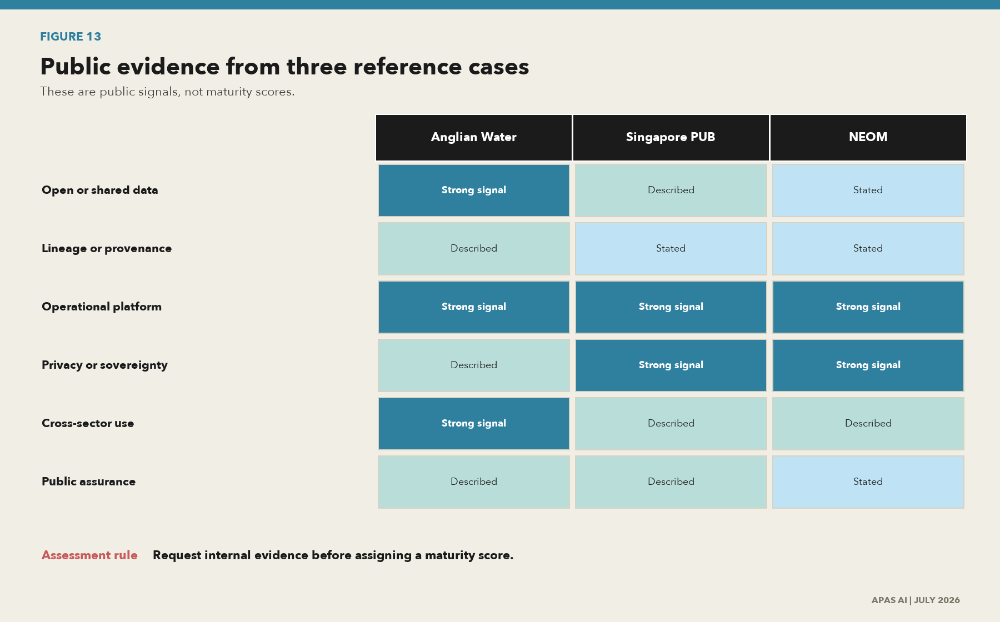
Figure 13. Public evidence from three reference cases
What this shows. Anglian Water, Singapore PUB and NEOM show useful signals in open data, smart metering, shared infrastructure and data sovereignty. Public claims are leads for assessment, not proof of enterprise maturity.
Source: Primary public sources from the issuing organizations. See source register C01-C09.
Anglian Water provides useful public evidence of an open-data program, a release schedule and FAIROE principles: findable, accessible, interoperable, reusable, open and ethical. Its CReDo work shows cross-sector infrastructure data for climate resilience. The Strategic Pipeline Alliance case shows GIS in a common data environment for a digital twin. The utility also reported 1.5 million smart meters in July 2026. [C01-C04]
Pattern |
Assessment question |
Planned data release |
Is there an owned release plan, consumer feedback and a maintained quality statement? |
FAIROE and publication risk |
Are provenance, quality, ethics, security and misuse risk reviewed before release? |
Cross-sector digital twin |
Do identifiers, versions, rights and scenario assumptions work across owners? |
Smart-meter scale |
Are interval quality, privacy, estimation, correction, access and retention controlled? |
PUB's Smart Water Meter Programme provides a public pattern for secure meter transmission, customer access to usage information and a large coordinated rollout with SP Services. The transferable question is not whether a utility has smart meters. It is whether the utility can govern meter identity, time, estimate, correction, customer access, privacy, security and downstream use at scale. [C05-C06]
NEOM and TONOMUS provide public signals around consent-based data, digital infrastructure, private cloud, local requirements and privacy. The case is useful for data sovereignty, platform and new-city design questions. The public sources do not prove enterprise control effectiveness. An assessment should request internal data flows, decision rights, access evidence, retention, supplier terms, incident records and independent assurance. [C07-C09]
Case rule A press release, website or partner story can identify a practice worth testing. It cannot establish that the practice operates across the enterprise or that its controls are effective. |
APPLICATION PAPER
Turn the paper into a progressive utility product that invites action and supports implementation.
|
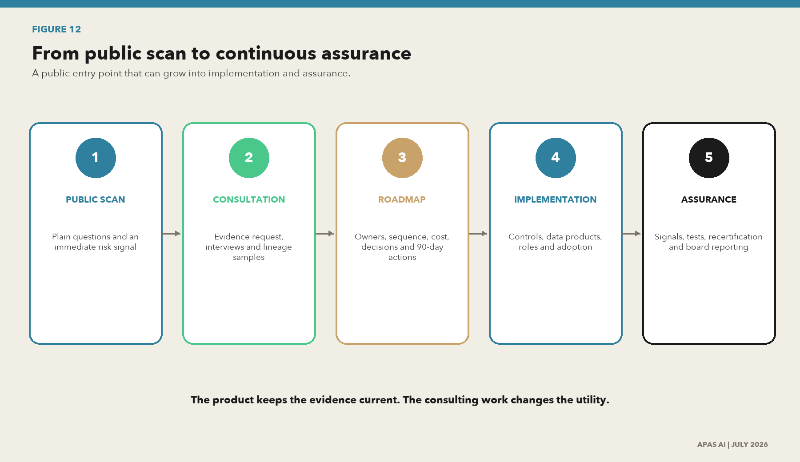
Figure 12. From public scan to continuous assurance
What this shows. The progressive application begins with a plain-language scan, moves into evidence-backed consultation and a funded roadmap, then stays current through control signals and periodic review.
Source: APAS AI product concept for the utility data governance assessment.
The paper should become the public reasoning layer for a progressive APAS assessment application. A utility enters through a clear scan. The scan explains the risk without pretending to be an audit. It can then invite a consultation, produce an evidence request, create a roadmap and remain connected to the work as controls are implemented.
Level |
User experience |
Output |
Commercial purpose |
1. Public scan |
Plain questions by utility role and decision type. |
Immediate profile, warning flags and next questions. |
Invite participation and qualified consultation. |
2. Guided assessment |
Evidence prompts, applicability, source links and saved progress. |
Domain scores, confidence, gaps and interview plan. |
Structured diagnostic engagement. |
3. Strategic roadmap |
Owners, actions, dependencies, dates, cost range and decisions. |
Funded plan and executive pack. |
Consulting and program design. |
4. Implementation workspace |
Controls, data products, lineage samples, issues and closure proof. |
Operating model and measurable adoption. |
Implementation and change support. |
5. Continuous assurance |
Automated signals, source monitoring, recertification and board views. |
Current control state and residual risk. |
Recurring product and assurance service. |
The application should make the work visible without reducing it to a single maturity number. The first view tells an executive where the organization stands, which twin phase is supported by evidence and which decision chains need attention first.
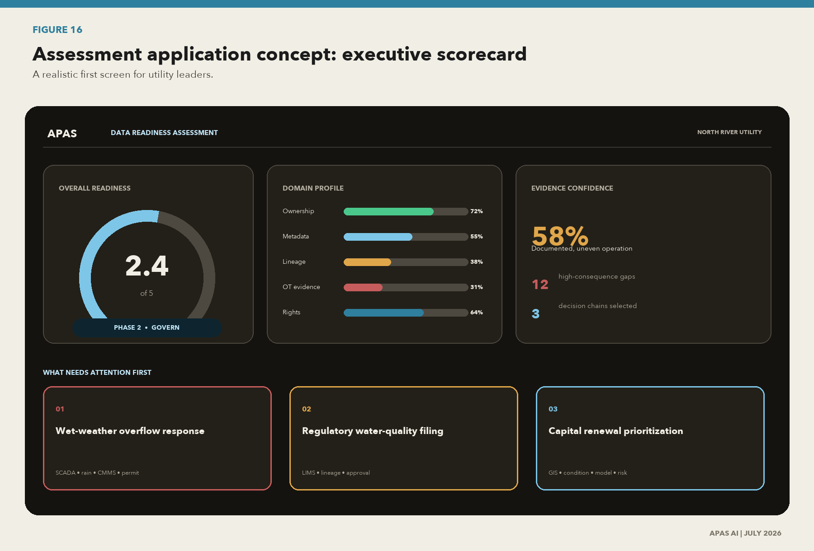
Figure 16. Assessment application concept: executive scorecard
What this shows. The executive view shows maturity, evidence confidence, the current twin phase, priority domains and the three decision chains that need attention first. The score is a starting point for action, not an assurance opinion.
Source: APAS AI product concept.
The workbench then opens every score. The assessor can see the question, sampled decision, systems in scope, required evidence, applicable authorities, finding, owner, target and closure proof.
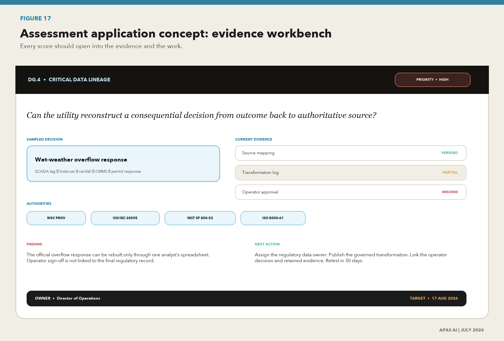
Figure 17. Assessment application concept: evidence workbench
What this shows. Each criterion connects the plain-language question to required evidence, applicable standards, sampled systems, findings, accountable owners and closure proof.
Source: APAS AI product concept.
The final view turns the assessment into continuous improvement. Baseline, target, implementation, retest and verified closure remain connected, so a utility can show progress without pretending that the work is ever permanently finished.
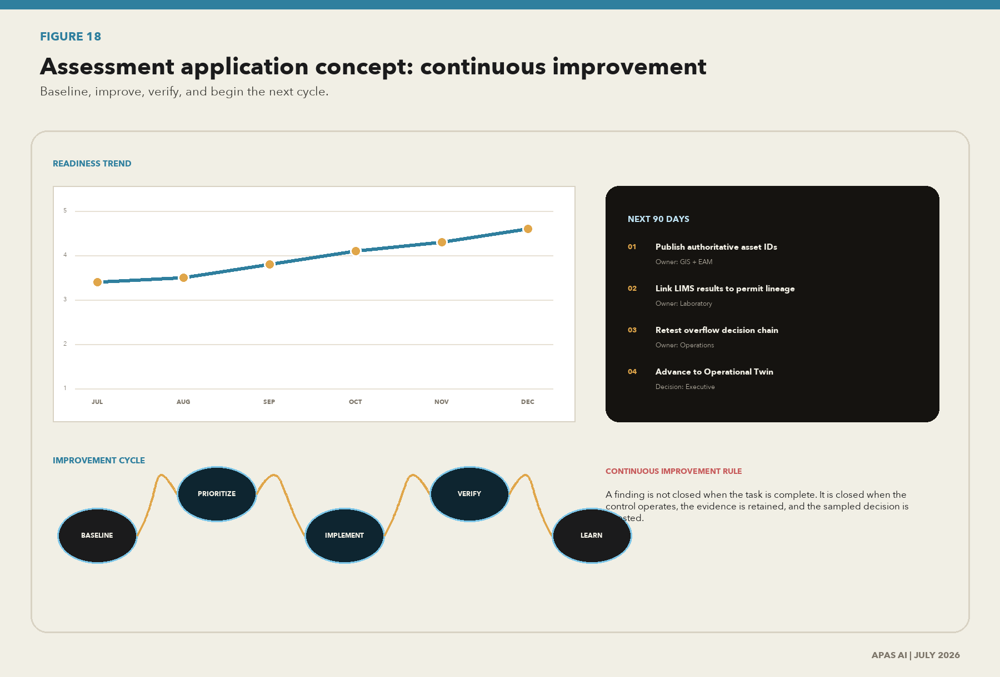
Figure 18. Assessment application concept: continuous improvement
What this shows. The application keeps the assessment alive by showing baseline, target, control implementation, retesting, verified closure and the next review cycle.
Source: APAS AI product concept.
The public scan must state that it is a screening result, not legal advice, certification or an audit opinion.
A high score must require evidence. Self-assertion alone cannot produce an assured rating.
The application should separate legal applicability, maturity, evidence confidence, consequence and urgency.
Connections to utility systems should begin read-only. Each connector needs purpose, scope, permission, logging and an exit path.
Sensitive operational, customer and security data should be minimized. The product should record evidence location and control result when copying the evidence is unnecessary.
Every recommendation should cite the authority, identify the owner, state the expected proof and explain why it matters to the utility.
The standards and legal register should be versioned, reviewed and visibly dated.
Entity |
Purpose |
Organization and service |
Ownership model, utility services, geography and critical functions. |
System, interface and dataset |
Inventory, owner, classification, location, criticality and lifecycle. |
Decision and use case |
Outcome, affected people or assets, consequence, human role and authority. |
Criterion and source |
Requirement, framework anchor, status, applicability and version. |
Control and test |
Design, owner, frequency, sample, result, exception and independent review. |
Evidence |
Type, location, period, identifier, integrity state and retention. |
Finding and action |
Gap, cause, risk, owner, due date, dependency, cost and closure proof. |
Data product and lineage |
Purpose, contract, source, transformation, consumer, quality and rights. |
Commercial principle The scan opens the door. The value comes from helping a utility change the way it owns, explains, tests and uses data. The product should support that change, not replace professional judgment with a score. |
The three decisions or data flows that need attention first.
The difference between the user's answer and the evidence required to support it.
The relevant standards, law or utility obligation in plain language.
The accountable seat and the next practical action.
A clear invitation to save the result, bring the right people together and begin an evidence-backed consultation.
APPLICATION PAPER
Three applications should use one governed language for assets, events, rules, evidence, decisions and outcomes.
|
This publication becomes useful to APAS when it controls how the applications are designed, released and improved. Pump OS, Pipe OS and Reg OS solve different utility problems. They should not create three different definitions of an asset, event, rule, owner, quality result or decision. The common governance spine below is the reusable product foundation.
Product rule Build a governed record once, connect it through stable identifiers and reuse it wherever the same physical asset, event, obligation or decision appears. A new application may add context. It should not silently create a competing truth. |
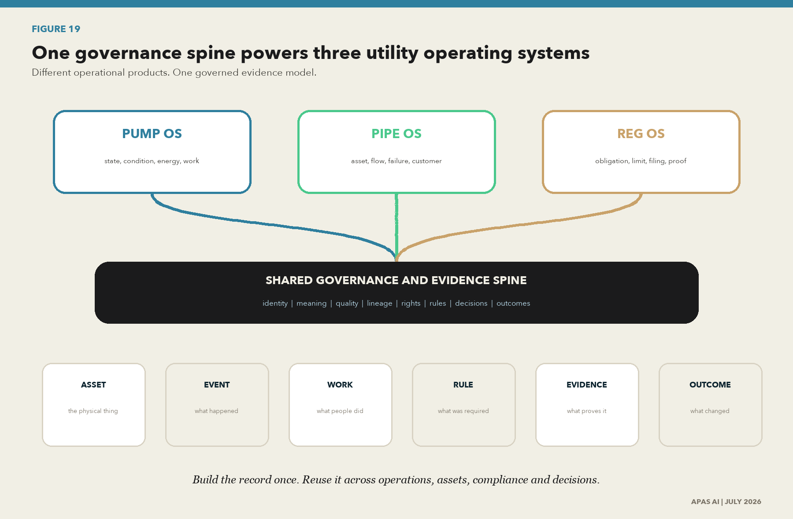
Figure 19. One governance spine powers three utility operating systems
What this shows. Pump OS, Pipe OS and Reg OS use different operational views, but they should share governed identity, meaning, quality, lineage, rights, rules, evidence, decisions and outcomes. The shared spine prevents each product from rebuilding a different version of truth.
Source: APAS AI product operating model.
Application |
Decisions it supports |
Data that must connect |
Governed output and proof |
Pump OS |
Is the pump available, healthy, efficient and safe to run? What work should happen next? |
SCADA status and alarms; historian trends; energy; vibration and condition; CMMS or EAM work; asset specifications; operating rules; hydraulic or process model. |
A current pump-state and risk product with asset identity, source tags, time, calibration, quality, rule version, work history, operator action and outcome. |
Pipe OS |
Where is failure, leakage, capacity or service risk? Which inspection, repair or renewal action creates the most value? |
GIS identity and geometry; materials and age; inspections; pressure and flow; breaks and leaks; work orders; hydraulic model; customer impact; cost and capital plan. |
A cited pipe condition and consequence product with location, version, evidence, uncertainty, model assumptions, priority decision, approved work and observed result. |
Reg OS |
Which obligation applies, are limits being met, what must be filed, and can the utility defend the answer? |
Obligation register; permit or consent; limits; samples; LIMS; SCADA; calculations; exceptions; approvals; correspondence; filing and corrective action. |
A current compliance-state and evidence package that links every reported answer to the rule, authoritative data, transformation, review, submission and closure proof. |
Shared record |
Simple meaning |
Minimum fields |
Asset |
The physical thing being operated, maintained, modeled or regulated. |
Stable identifier, type, location, owner, configuration, lifecycle state and source. |
Observation or event |
What a sensor, person, laboratory or system says happened. |
Source, asset or location, value, unit, time, method, quality state and version. |
Work |
The inspection, maintenance, response or change performed by people or systems. |
Work identifier, asset, reason, owner, start, completion, result, parts, evidence and approval. |
Rule or obligation |
The requirement, limit, operating rule or decision condition that applies. |
Authority, citation, scope, effective date, owner, test, exception and review date. |
Evidence |
The retained proof that supports a fact, control, decision or outcome. |
Identifier, type, source, period, custodian, integrity state, access, retention and linked decision. |
Decision |
The choice made, by whom, using which evidence and authority. |
Question, alternatives, recommendation, authority, approver, evidence, time, conditions and reason. |
Outcome |
What changed after the decision or action. |
Service, safety, compliance, cost, customer or asset result; target; measure; period; lesson and next action. |
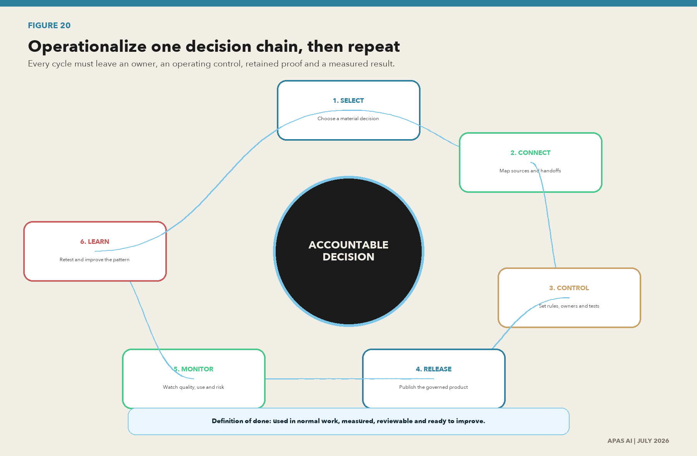
Figure 20. Operationalize one decision chain, then repeat
What this shows. The operating loop starts with a consequential decision, connects its evidence, puts controls into normal work, releases a governed product, monitors use and outcomes, and turns what is learned into the next improvement cycle.
Source: APAS AI implementation method.
Select one consequential decision. State the user, service outcome, consequence and current pain in plain English.
Map the evidence chain. Connect the physical source, system record, transformation, model, rule, person, action and outcome.
Define the data contract. Name the owner, identifiers, meaning, units, quality rules, approved use, access, freshness, retention and change process.
Put controls into normal work. Automate checks where practical and keep a clear human decision where judgment or public accountability is required.
Release the governed product. Show source, time, quality, limits and lineage to the user instead of hiding them in technical logs.
Measure adoption and outcome. Confirm that people use the product and that service, safety, compliance, affordability or delivery improves.
Retest the decision chain. Sample real cases, verify closure, record residual risk and decide what must change.
Reuse the pattern. Carry the same records, controls and evidence methods into the next Pump OS, Pipe OS or Reg OS use case.
Gate |
Question before release |
Evidence required |
Purpose |
Can a utility user explain the decision this feature improves and the harm it helps prevent? |
Named user, decision statement, outcome, consequence and product owner. |
Data |
Can the team explain every important input in simple English and connect it to an approved source? |
Data contract, identifier map, source register, quality rules, rights and lineage. |
Control |
Does the feature detect bad, missing, late, changed or unauthorized data before it misleads a user? |
Control design, owner, test results, exceptions, alerts and recovery procedure. |
Decision |
Is the recommendation separate from the person or rule that has authority to act? |
Decision rights, human review, approval record, override reason and escalation path. |
Evidence |
Could the utility reconstruct the answer during an incident, audit or regulatory challenge? |
Retained source, transformation, model or rule version, user action and integrity record. |
Outcome |
Does the team know whether the feature is used and whether it improves the utility result? |
Adoption measure, outcome measure, baseline, target, review cycle and product decision. |
A utility user can understand the feature, its data and its limits without a data-science translator.
The same asset, event, rule and decision identifiers work across the three products where the records overlap.
Every important answer displays its source, time, quality state and approved purpose.
The responsible, accountable, consulted and informed (RACI) roles are named for product ownership, data ownership, control operation, approval and support.
A failed control creates an owned action, a due date, closure proof and a retest.
A release has adoption and utility-outcome measures, not only technical completion measures.
Support, incident response, data correction, model rollback, supplier exit and record retention are tested before scale.
The usefulness test If a page, score, model or feature does not help a named utility person make, explain, control or improve a real decision, it is not finished. Operational usefulness is the release standard. |
Reusable asset |
What APAS maintains |
Release evidence |
Common information model |
Shared objects, identifiers, definitions, ownership and approved change rules. |
Approved schema and term changes, plus a completed mapping test. |
Connector pattern |
Read-only source mapping, security, quality, lineage, recovery and exit requirements. |
Connector test, permission record, source reconciliation and recovery result. |
Decision pattern |
Question, rule, evidence, recommendation, human authority, action and outcome. |
Decision trace, approval, override record and outcome review. |
Release evidence pack |
Tests, known limits, approvals, rollback, support and retained versions. |
Signed release gate, test results, runbook and rollback proof. |
Product measures |
Adoption, control health, utility outcomes, exceptions and incidents. |
Baseline, target, current trend and recorded product decision. |
APPLICATION PAPER
Begin with consequential decisions, visible ownership and proof that can be reviewed.
|
Appoint an executive sponsor and a working owner with authority across operations, data, security, legal and AI.
Select three to five material decisions: one operational, one regulatory, one customer, one capital and one AI or analytics use case where applicable.
Create the first system, data, interface and owner map for those decisions.
Inventory current AI use cases and suppliers. Do not limit the inventory to centrally approved tools.
Record immediate legal, regulatory, contract and records obligations for the selected scope.
Trace each selected decision from source to outcome and identify manual steps, spreadsheets, estimates and unowned changes.
Test identity, meaning, quality, lineage, access, retention and approval evidence at each handoff.
Name an owner and steward for each critical data product or domain in scope.
Define the quality requirements by use and consequence, then run the first recurring measures.
Review supplier data rights, training-use restrictions, locations, assurance and exit terms.
Score the selected scope using maturity and evidence confidence. Challenge unsupported ratings.
Separate immediate control fixes from operating-model changes and platform work.
Approve a 12-month roadmap with owners, dependencies, funding, decision dates and closure evidence.
Publish a small executive dashboard: critical decisions covered, evidence gaps, open high-consequence findings, issue age and control results.
Schedule the next evidence review and select the next set of decisions to bring into the pattern.
Which utility decisions would cause the most harm if the underlying data were wrong, late or used outside its purpose?
Can we trace those decisions to authoritative sources and reconstruct what happened?
Which person owns the fitness of each critical dataset, not only the system that stores it?
Where are manual transformations and local spreadsheets part of the official decision chain?
Which AI uses could affect service, safety, customers, employees, capital or regulatory outcomes?
What evidence would we need if a regulator, auditor, customer or incident team challenged the decision tomorrow?
Which actions will change the operating system of the utility, and which actions merely close a task?
Deliverable |
Management use |
Decision and data map |
Shows critical sources, handoffs, owners, suppliers and evidence gaps. |
AI and analytics inventory |
Shows use, consequence, owner, data source, human role and review state. |
Evidence-backed scorecard |
Separates maturity from evidence confidence and makes disagreement visible. |
Immediate control plan |
Names high-consequence fixes, owners, dates and closure proof. |
Twelve-month roadmap |
Sequences operating model, data products, controls, platforms, adoption and assurance. |
Executive risk decision |
Records what is funded, accepted, stopped, transferred or scheduled for more work. |
APPLICATION PAPER
Transformation begins when a utility can explain the decision before it has to defend the incident.
|
The opportunity in front of utilities is real. AI can help people see patterns, reach information and act with greater speed. The opportunity will not be realized by placing AI on top of data that the organization cannot explain.
Data governance is how a utility turns responsibility into a repeatable system. It gives the operator context, the engineer traceability, the customer a fair process, the executive a clear risk decision, the regulator evidence and the AI system a controlled foundation.
This is not a one-time project. Standards will change. Laws will change. Systems, suppliers, people and risks will change. The living document, the assessment and the application must change with them. The constant is the discipline: write the decision, act through the control, keep the proof and close the gap.
The commitment We will keep trying to build transformational solutions because the public work deserves more than disconnected transactions. Data-ready before AI-ready. Evidence before assurance. Accountability before scale. |
APPLICATION PAPER
Each criterion is written as an operating statement and paired with the evidence needed to test it.
|
The criteria form the working core of the assessment. Not-applicable decisions require a documented scope reason. Source IDs map to Appendix B. The full assessment also records maturity, evidence confidence, consequence, urgency, owner, finding and action.
Scope: Governance scope, value outcomes, risk appetite, funding and decision escalation Primary anchors: I01,I08,F02,F04,US06
ID |
Criterion |
Evidence examples |
Sources |
D01.1 |
The governing body has approved the scope and principles for data governance across IT, OT, analytics and AI. |
Approved charter; board minutes; scope map |
I01,I08 |
D01.2 |
Data-governance outcomes are tied to utility value, service reliability, safety, affordability, resilience and regulatory commitments. |
Outcome map; benefit measures; investment cases |
I01,I23 |
D01.3 |
Risk appetite and escalation thresholds exist for data quality, integrity, privacy, sharing and AI. |
Risk appetite; thresholds; accepted-risk register |
N01,N06,I18 |
D01.4 |
Decision rights distinguish governing, owning, stewarding, operating, assuring and legal accountabilities. |
Decision-rights matrix; delegations |
I01,I02,F04 |
D01.5 |
A funded, sequenced roadmap is reviewed against measurable outcomes and regulatory change. |
Portfolio; funding; quarterly review pack |
F02,US11 |
Scope: Named owners/stewards/custodians, councils, segregation of duties and competence Primary anchors: I01,I02,F01,N04
ID |
Criterion |
Evidence examples |
Sources |
D02.1 |
Every critical data domain and product has an accountable owner and an operational steward. |
Catalog ownership fields; role letters |
F01,I02 |
D02.2 |
Stewards have defined authority, time, competence, performance measures and escalation routes. |
Role profile; training; objectives |
F01,I01 |
D02.3 |
Cross-functional forums resolve data decisions involving operations, security, privacy, legal and analytics. |
Terms of reference; decision log |
I01,N01 |
D02.4 |
Conflicting duties are segregated for data creation, approval, release, change and assurance. |
RACI; privileged-role review; workflow evidence |
N04 |
D02.5 |
Third-party and managed-service responsibilities remain explicit and enforceable. |
Contracts; shared-responsibility matrix; assurance reports |
N09,F03 |
Scope: Inventory, authoritative identifiers, business/technical metadata, terminology and interoperability Primary anchors: I14,I15,I16,W03,W10,W11,U01
ID |
Criterion |
Evidence examples |
Sources |
D03.1 |
A current inventory identifies data assets, systems, interfaces, owners, sensitivity, criticality and jurisdiction. |
Catalog export; system inventory; coverage report |
I14,N04,US05 |
D03.2 |
Authoritative identifiers connect physical assets, locations, customers, samples, work orders and digital records. |
Identifier standard; match-rate report |
I15,I16,U01 |
D03.3 |
Business terms, definitions and units are governed and mapped to technical schemas. |
Glossary; ontology; term-to-field mappings |
W10,W11,I14 |
D03.4 |
Metadata includes version, temporal validity, spatial reference, quality, rights, provenance and retention. |
Metadata profile; completeness tests |
I16,W03,W04 |
D03.5 |
Schema and metadata changes are versioned, impact-assessed and communicated. |
Version history; compatibility tests; subscribers |
W03,N04 |
Scope: Source-to-use paths, transformations, actors, versions, run events and reproducibility Primary anchors: W01,W02,U06,N02,N03,I16
ID |
Criterion |
Evidence examples |
Sources |
D04.1 |
Source-to-consumption lineage is available for critical reports, decisions, data products and AI use cases. |
Lineage graph; sampled trace walkthrough |
W01,U06,N02 |
D04.2 |
Transformation provenance records inputs, outputs, activity/run, actor/service, time and code/config version. |
Run events; job metadata; repository tags |
W01,W02,U06 |
D04.3 |
Manual handoffs and spreadsheet transformations are included in lineage or governed as exceptions. |
Manual-control register; reconciliations |
N04,N05 |
D04.4 |
Lineage supports impact analysis, incident investigation, reproducibility and regulatory reporting. |
Impact query; replay test; incident evidence |
N02,N04 |
D04.5 |
Provenance evidence is retained with the governed record and protected from unauthorized alteration. |
Immutable/audited store; retention; integrity test |
W09,U07,N04 |
Scope: Fitness-for-purpose requirements, controls, measurement, issue handling and monitoring Primary anchors: I04,I05,I06,I07,I10,I11,I12,W04
ID |
Criterion |
Evidence examples |
Sources |
D05.1 |
Quality requirements are defined by intended use, criticality and decision consequences. |
Data-quality contract; critical-data-element rules |
I05,I06,I10 |
D05.2 |
Controls measure completeness, accuracy, consistency, timeliness, validity, uniqueness and representativeness as applicable. |
Rule library; measurement results |
I05,I10,W04 |
D05.3 |
Quality is monitored at source, transformation, product and consumption points. |
Observability dashboard; control coverage |
I07,I12 |
D05.4 |
Issues have ownership, severity, root cause, correction, prevention and closure verification. |
Issue tickets; root-cause analysis; retest |
I06,I12,N05 |
D05.5 |
Consumers can see fitness, limitations, freshness and known exceptions before use. |
Quality statement; service levels; data-product page |
W03,W04,W05 |
Scope: Access, change control, logging, cryptographic proof, recovery, OT separation and incident response Primary anchors: I20,N04,N05,N06,U04,U07,U08
ID |
Criterion |
Evidence examples |
Sources |
D06.1 |
Data access is authorized by role, purpose, least privilege and environment, including OT/IT boundaries. |
Access matrix; recertification; OT segmentation |
I20,N04,U04 |
D06.2 |
Changes to data, schemas, mappings, controls and pipelines are authorized, tested and logged. |
Change tickets; approvals; deployment logs |
N04 |
D06.3 |
Integrity controls detect unauthorized or accidental alteration in transit, at rest and during processing. |
Hashes/signatures; validation; exception alerts |
N04,W09,U07 |
D06.4 |
Audit logs are complete, time-synchronized, retained, protected and routinely reviewed. |
Logging standard; sample; review evidence |
N04,N05 |
D06.5 |
Backup, recovery, continuity and cyber-response exercises cover critical data and provenance evidence. |
Recovery tests; RTO/RPO; exercise findings |
N06,U08,U09 |
Scope: Purpose, minimization, rights, impact assessment, fairness, explainability and redress Primary anchors: I21,N07,F06,F07,EU01,EU04
ID |
Criterion |
Evidence examples |
Sources |
D07.1 |
Every personal- or sensitive-data processing activity has a documented purpose and lawful/authorized basis. |
Processing register; authority; purpose statement |
I21,EU04,G15 |
D07.2 |
Collection and use are minimized; retention and secondary-use limits are enforced. |
Minimization review; deletion tests; use restrictions |
N07,I21 |
D07.3 |
Rights, notices, consent where required, complaints and redress are operational and measured. |
Notices; request logs; response metrics |
EU04,G15 |
D07.4 |
High-impact analytics and AI receive privacy, fairness, human-rights and operational impact assessment. |
PIA/DPIA/AIA; approval; mitigations |
N01,F07,EU01,US03 |
D07.5 |
External transparency accurately describes data sources, limitations, automated decisions and human oversight. |
Model/data cards; public notice; review sign-off |
F06,F07,US15 |
Scope: Creation, version, legal hold, archival, retention, deletion and authentic records Primary anchors: I22,N04,US09,EU03
ID |
Criterion |
Evidence examples |
Sources |
D08.1 |
Lifecycle rules identify the system of record, versions, temporal validity and disposition for each critical data class. |
Lifecycle standard; system-of-record map |
I22,W03 |
D08.2 |
Retention schedules map law, regulation, contract, operational need and historical value. |
Schedule; authority citations; approvals |
I22,US09 |
D08.3 |
Legal holds and incident holds suspend disposal reliably across copies and downstream products. |
Hold workflow; affected-asset query; test |
I22,N04 |
D08.4 |
Deletion/destruction is authorized, verifiable and propagated to derived copies when required. |
Disposal approval; deletion certificate; reconciliation |
I22,I21 |
D08.5 |
Archived records remain readable, authentic, searchable and linked to necessary provenance. |
Archive test; format migration; provenance link |
I22,W01 |
Scope: Data-use rights, contracts, classification, open/shared/closed decisions and cross-border controls Primary anchors: W03,W05,W07,N09,EU02,EU03,G14
ID |
Criterion |
Evidence examples |
Sources |
D09.1 |
Data is deliberately classified as open, shared or closed through a documented benefit-risk decision. |
Classification decision; risk register |
I03,U11,U12 |
D09.2 |
Data-sharing agreements specify purpose, rights, restrictions, quality, security, provenance, retention and termination. |
Agreement template; executed sample |
W07,N09,EU03 |
D09.3 |
Licences and machine-readable use policies travel with published data products where practicable. |
Licence metadata; ODRL policy; consumer terms |
W03,W07 |
D09.4 |
Cross-border, localization, sovereignty and critical-infrastructure constraints are evaluated before transfer. |
Transfer assessment; hosting/location evidence |
EU04,G12,G14,G15 |
D09.5 |
Third-party data and AI vendors provide source, rights, training-use, lineage, security and exit evidence. |
Vendor questionnaire; contract; exit test |
N09,US04,F03 |
Scope: SCADA/AMI/GIS/EAM/LIMS integration, critical assets, network models and operational safety Primary anchors: I23,I24,I25,I26,U01,U03,U04,U08,U11
ID |
Criterion |
Evidence examples |
Sources |
D10.1 |
A governed information model connects OT/SCADA, AMI, GIS, EAM/CMMS, LIMS and enterprise analytics. |
Architecture; CIM/asset mappings; interface catalog |
U01,U02,U03 |
D10.2 |
Asset and location master data supports safety, maintenance, resilience and regulatory reporting. |
Asset hierarchy; GIS/EAM reconciliation; KPI trace |
I23,I24,I25,I26 |
D10.3 |
Operational telemetry includes sensor identity, calibration, time quality, units, quality flags and communication state. |
Telemetry standard; calibration records; sample |
U03,I10 |
D10.4 |
Digital-twin and network-model versions are synchronized with physical change and approved configuration. |
As-built workflow; model version; reconciliation |
I23,N04,C03 |
D10.5 |
Critical utility datasets and interfaces are included in resilience, cyber and emergency exercises. |
RRA/ERP; exercise scenario; findings |
U08,U09,U10 |
Scope: Use-case inventory, training/evaluation data, representativeness, traceability, monitoring and retirement Primary anchors: I04,I05,I08,I17,I18,I19,N01,US03,EU01
ID |
Criterion |
Evidence examples |
Sources |
D11.1 |
An AI/analytics inventory records owner, purpose, users, risk, deployment status, data sources and vendor. |
Use-case inventory; risk tier; owner |
N01,US03,EU01 |
D11.2 |
Training, evaluation, prompt/context and operational data are versioned with rights and provenance. |
Dataset manifest; licences; lineage; version IDs |
I04,I08,W01,US15 |
D11.3 |
Representativeness, leakage, bias, contamination and suitability are tested against the intended utility context. |
Test plan; segments; results; limitations |
I05,I06,N01 |
D11.4 |
Release gates require independent validation, security/privacy review, human oversight and rollback. |
Gate checklist; test evidence; rollback drill |
I17,I18,I19,US03 |
D11.5 |
Post-release monitoring covers data drift, quality, integrity, performance, impact, incidents and retirement triggers. |
Monitoring; thresholds; incidents; retirement plan |
N01,I17,EU01 |
Scope: Control tests, independent challenge, metrics, exceptions, source updates and remediation verification Primary anchors: N05,I13,I17,F03,N10
ID |
Criterion |
Evidence examples |
Sources |
D12.1 |
Every criterion has an evidence owner, source, period, status, reviewer and expiry/retest date. |
Evidence register; ownership; expiry report |
N05,N10 |
D12.2 |
Assessments distinguish control design, operating effectiveness and independent assurance. |
Test program; sampling; assurance opinion |
N05,F03 |
D12.3 |
Coverage, exceptions, overdue actions and residual risk are reported to the right governance level. |
Dashboard; escalation minutes; accepted risks |
I01,N06 |
D12.4 |
Findings have root cause, accountable action, target date, validation and sustainable closure. |
Remediation register; retest; closure approval |
N05,I13 |
D12.5 |
The authority register is versioned and refreshed on a scheduled and event-driven basis. |
Source register; change log; review calendar |
N08,US11,U12 |
APPLICATION PAPER
Every external source remains at the back of the paper in a compact digital endnote format.
|
Each source title is clickable in the Word, PDF and HTML editions. The printed register intentionally omits a repetitive raw-URL column. Status and applicability can change. Confirm the current edition, effective date and coverage before using a source for legal advice, certification or a formal assurance opinion. Public case sources identify signals to test and do not prove enterprise maturity.
ID |
Linked source |
ID |
Linked source |
I01 |
ISO/IEC 38505-1:2017 - Governance of data, Part 1 ISO/IEC | Published; confirmed 2022 |
I02 |
ISO/IEC TR 38505-2:2018 - Implications of ISO/IEC 38505-1 for data management ISO/IEC | Published; confirmed 2023 |
I03 |
ISO/IEC TS 38505-3:2021 - Governance of data, Part 3: Data classification ISO/IEC | Published |
I04 |
ISO/IEC 5259-1:2024 - Data quality for analytics and ML: overview ISO/IEC | Published |
I05 |
ISO/IEC 5259-2:2024 - Data quality measures ISO/IEC | Published |
I06 |
ISO/IEC 5259-3:2024 - Data quality management requirements and guidelines ISO/IEC | Published |
I07 |
ISO/IEC 5259-4:2024 - Data quality process framework ISO/IEC | Published |
I08 |
ISO/IEC 5259-5:2025 - Data quality governance framework ISO/IEC | Published |
I09 |
ISO/IEC TR 5259-6:2026 - Visualization framework for data quality ISO/IEC | Published |
I10 |
ISO/IEC 25012:2008 - Data quality model ISO/IEC | Published; confirmed 2025 |
I11 |
ISO 8000-1:2022 - Data quality overview ISO | Published; confirmed 2024 |
I12 |
ISO 8000-61:2016 - Data quality management process reference model ISO | Published; confirmed 2022 |
I13 |
ISO 8000-64:2022 - Organizational process maturity assessment ISO | Published |
I14 |
ISO/IEC 11179-1:2023 - Metadata registries framework ISO/IEC | Published |
I15 |
ISO/IEC 11179-30:2023 - Basic attributes of metadata ISO/IEC | Published |
I16 |
ISO/IEC 11179-33:2023 - Dataset registration metamodel ISO/IEC | Published |
I17 |
ISO/IEC 42001:2023 - AI management system ISO/IEC | Published |
I18 |
ISO/IEC 23894:2023 - AI risk management guidance ISO/IEC | Published |
I19 |
ISO/IEC 5338:2023 - AI system life-cycle processes ISO/IEC | Published |
I20 |
ISO/IEC 27001:2022 - Information security management system ISO/IEC | Published; amended 2024 |
I21 |
ISO/IEC 27701:2025 - Privacy information management system ISO/IEC | Published |
I22 |
ISO 15489-1:2016 - Records management concepts and principles ISO | Published; confirmed 2021 |
I23 |
ISO 55001:2024 - Asset management system requirements ISO | Published |
I24 |
ISO 24516-1:2016 + Amd 1:2025 - Drinking-water distribution assets ISO | Published; revision planned |
I25 |
ISO 24516-2:2019 - Waterworks asset management ISO | Published; revision planned |
I26 |
ISO 24516-3:2017 - Wastewater collection-network assets ISO | Published; confirmed 2023 |
W01 |
W3C | Recommendation |
W02 |
W3C | Working Group Note |
W03 |
Data Catalog Vocabulary (DCAT) 3 W3C | Recommendation; 2024 |
W04 |
W3C | Working Group Note |
W05 |
Data on the Web Best Practices W3C | Recommendation |
W06 |
Shapes Constraint Language (SHACL) W3C | Recommendation |
W07 |
W3C | Recommendation |
W08 |
Verifiable Credentials Data Model 2.0 W3C | Recommendation; 2025 |
W09 |
Verifiable Credential Data Integrity 1.0 W3C | Recommendation |
W10 |
RDF 1.1 Concepts and Abstract Syntax W3C | Recommendation |
W11 |
SKOS Simple Knowledge Organization System W3C | Recommendation |
W12 |
W3C | Recommendation |
N01 |
AI Risk Management Framework 1.0 NIST | Current baseline; revision underway in 2026 |
N02 |
Research Data Framework (RDaF), SP 1500-18r2 NIST | Final |
N03 |
NIST | Current glossary entry |
N04 |
SP 800-53 Rev. 5, Release 5.2.0 NIST | Final; August 2025 release |
N05 |
NIST | Final |
N06 |
NIST | Final |
N07 |
Privacy Framework 1.0 / 1.1 initial public draft NIST | 1.0 final; 1.1 draft |
N08 |
Joint Frameworks Data Governance and Management Profile NIST | In development; sessions through May 2026 |
N09 |
SP 800-161 Rev. 1 - Cybersecurity supply-chain risk management NIST | Final |
N10 |
OSCAL - Open Security Controls Assessment Language NIST | Active program |
U01 |
IEC 61968-11:2013 - Common Information Model for distribution IEC | Published |
U02 |
IEC 61970 Common Information Model IEC | Published series |
U03 |
IEC 61850 family - Power utility automation IEC | Published / evolving series |
U04 |
IEC 62443-2-1:2024 - IACS security program requirements IEC | Published |
U05 |
IEEE 7000-series standards projects IEEE | Published series |
U06 |
OpenLineage | Active open standard |
U07 |
RFC 8785 - JSON Canonicalization Scheme IETF / RFC Editor | Informational RFC |
U08 |
America's Water Infrastructure Act: risk and resilience EPA | Statutory program |
U09 |
Cybersecurity assessments for public water systems EPA | Current program |
U10 |
Top cyber actions for securing water systems CISA / EPA / FBI | 2024 joint guidance |
U11 |
Ofgem | Published 17 Nov 2025 |
U12 |
Securing open data in energy consultation Ofgem | Closed 15 Jul 2026; decision pending |
U13 |
Open data in the water industry Ofwat | Current sector program |
U14 |
AWWA | Current |
F01 |
DAMA International | Current; DMBOK 3.0 in development |
F02 |
EDM Council | Announced June 2025 |
F03 |
Cloud Data Management Capabilities (CDMC) EDM Council | Version 1.1 |
F04 |
ISACA | Current |
F05 |
GO FAIR | Current principles |
F06 |
OECD | Updated May 2024 |
F07 |
Recommendation on the Ethics of Artificial Intelligence UNESCO | Adopted 2021 |
US01 |
White House | Published 23 Jul 2025 |
US02 |
Executive Order 14179 - Removing Barriers to American Leadership in AI White House | Issued 23 Jan 2025 |
US03 |
M-25-21 - Accelerating Federal Use of AI through Innovation, Governance, and Public Trust OMB | Issued 3 Apr 2025 |
US04 |
M-25-22 - Driving Efficient Acquisition of Artificial Intelligence in Government OMB | Issued 3 Apr 2025 |
US05 |
M-25-05 - Phase 2 OPEN Government Data Act guidance OMB | Issued 15 Jan 2025 |
US06 |
Federal Data Strategy principles Federal Data Strategy | Current |
US07 |
Federal Data Strategy practices Federal Data Strategy | Current |
US08 |
Foundations for Evidence-Based Policymaking Act / OPEN Government Data Act US Congress | Enacted 2019 |
US09 |
Circular A-130 - Managing Information as a Strategic Resource OMB | Current baseline |
US10 |
President's FY 2026 Discretionary Budget Request OMB | Published 2025 |
US11 |
M-26-10 - Transparency, Accountability, and Oversight of Federal Technology OMB | Issued 31 Mar 2026 |
US12 |
SB24-205 - Consumer Protections for Artificial Intelligence Colorado | Signed 17 May 2024; effective-date watch |
US13 |
HB 149 - Texas Responsible Artificial Intelligence Governance Act Texas | Effective 1 Jan 2026 |
US14 |
SB 149 / Artificial Intelligence Policy Act Utah | Effective 1 May 2024 |
US15 |
AB 2013 - Generative AI training-data transparency California | Enacted 2024 |
US16 |
SB 942 - AI-generated content transparency California | Enacted 2024 |
US17 |
Local Law 144 - Automated Employment Decision Tools New York City | Enforced from 5 Jul 2023 |
EU01 |
Regulation (EU) 2024/1689 - AI Act European Union | In force; phased application |
EU02 |
Regulation (EU) 2022/868 - Data Governance Act European Union | Applicable |
EU03 |
Regulation (EU) 2023/2854 - Data Act European Union | Applicable from 12 Sep 2025 |
EU04 |
Regulation (EU) 2016/679 - General Data Protection Regulation European Union | Applicable |
EU05 |
Directive (EU) 2022/2555 - NIS2 European Union | Transposition / enforcement varies |
EU06 |
Directive (EU) 2019/1024 - Open Data Directive European Union | Transposed |
EU07 |
European Commission | Published 9 Apr 2025 |
EU08 |
European Commission | Published 8 Oct 2025 |
EU09 |
European Commission | Published 19 Nov 2025 |
G01 |
Data (Use and Access) Act 2025 United Kingdom | Royal Assent 19 Jun 2025; phased commencement |
G02 |
Directive on Automated Decision-Making + Algorithmic Impact Assessment Canada | Current |
G03 |
2023-2026 Data Strategy for the Federal Public Service Canada | Current strategy |
G04 |
Policy for responsible use of AI in government v2.0 Australia | Effective 15 Dec 2025 |
G05 |
Australian Government Data Governance Framework Australia | Published 2025 |
G06 |
AI Guidelines for Business v1.0 Japan | Published Apr 2024 |
G07 |
Framework Act on the Development of AI and Establishment of Trust Republic of Korea | Effective Jan 2026 |
G08 |
Public Sector (Governance) Act 2018 Singapore | In force |
G09 |
Model AI Governance Frameworks Singapore / IMDA | Traditional, GenAI 2024; Agentic AI 2026 |
G10 |
Digital Personal Data Protection Rules 2025 India | Notified with phased implementation |
G11 |
Personal Information Protection Law China | In force |
G12 |
Federal Decree-Law No. 45 of 2021 on Personal Data Protection United Arab Emirates | In force |
G13 |
Lei Geral de Proteção de Dados (LGPD) Brazil | In force |
G14 |
National Data Governance Interim Regulations / NDMO policies Saudi Arabia / SDAIA | Current national policies |
G15 |
Saudi Arabia | In force |
C01 |
Anglian Water | Current; 2026 release schedule |
C02 |
CReDo: cross-sector resilient infrastructure digital twin Anglian Water Group | Case study |
C03 |
Strategic Pipeline Alliance: GIS common data environment Digital Twin Hub / Anglian Water | Case study |
C04 |
Anglian Water | Published 7 Jul 2026 |
C05 |
Singapore PUB | Current |
C06 |
Smart Water Meter rollout with SP Services Singapore PUB | Published 2021 |
C07 |
NEOM | Current |
C08 |
Communications facility and data center NEOM / TONOMUS | Current |
C09 |
NEOM | Effective 16 Apr 2025 |
ISO-03 |
ISO/IEC 8183:2023 - Artificial intelligence - Data life cycle framework ISO/IEC | Consensus standard · current |
ISO-07 |
ISO/IEC 5259-4:2024 - Data quality process framework ISO/IEC | Consensus standard · current |
ISO-10 |
ISO/IEC 11179-3:2023 - Metadata registries - Registry metamodel and basic attributes ISO/IEC | Consensus standard · current |
ISO-11 |
ISO/IEC 11179-3:2023/Amd 1:2026 - Enhancements to Item Mapping ISO/IEC | Amendment · published May 2026 |
ISO-14 |
ISO/IEC 42001:2023 - Artificial intelligence management system ISO/IEC | Certifiable management-system standard |
ISO-18 |
ISO/IEC 27701 - Privacy information management ISO/IEC | Management-system standard |
ISO-20 |
ISO 23081-1:2017 - Metadata for records - Principles ISO | Consensus standard · current |
ISO-22 |
ISO 24511:2024 - Management of wastewater utilities and service assessment ISO | Utility-sector consensus standard |
ISO-23 |
ISO/TR 24514:2018 - Examples of performance indicators for water utilities ISO | Technical report · current |
W3C-02 |
W3C | W3C Recommendation |
W3C-04 |
W3C | W3C Recommendation |
W3C-05 |
PROV-AQ: Provenance Access and Query W3C | W3C Note |
W3C-08 |
Semantic Sensor Network Ontology (SSN) and SOSA W3C/OGC | W3C Recommendation |
OGC-01 |
Open Geospatial Consortium | OGC implementation standard |
OGC-02 |
Open Geospatial Consortium | OGC standard family |
OGC-03 |
Open Geospatial Consortium | OGC implementation standard |
NIST-01 |
Cybersecurity Framework (CSF) 2.0 NIST | Final framework · 2024 |
NIST-04 |
NIST | Companion guidance |
NIST-05 |
NIST AI 600-1 - Generative AI Profile NIST | Final cross-sector profile · 2024 |
NIST-06 |
NIST AI 100-4 - Reducing Risks Posed by Synthetic Content NIST | Final report · 2026 |
NIST-08 |
Data Governance and Management Profile Concept Paper NIST | Concept paper · 2024 |
NIST-09 |
Research Data Framework (RDaF) Version 2.0 - SP 1500-18r2 NIST | Final framework · 2024 |
NIST-12 |
NIST Glossary - data integrity NIST | Authoritative terminology |
NIST-14 |
SP 1800-25 - Data Integrity: Identifying and Protecting Assets NIST NCCoE | Final practice guide · 2020 |
NIST-15 |
SP 1800-26 - Data Integrity: Detecting and Responding NIST NCCoE | Final practice guide · 2020 |
NIST-17 |
SP 800-218 - Secure Software Development Framework NIST | Final guidance |
NIST-18 |
NISTIR 7628 Rev. 1 - Guidelines for Smart Grid Cybersecurity NIST | Final utility guidance |
NIST-19 |
NIST TN 2051 - Cybersecurity Framework Smart Grid Profile NIST | Final utility profile · 2019 |
UTIL-02 |
IEC 61968-9:2024 - Interfaces for meter reading and control IEC | International standard · 2024 |
UTIL-03 |
IEC 62351 series - Power systems data and communications security IEC | International standard family |
UTIL-04 |
IEC 62351-7:2025 - Network and system management data object models IEC | International standard · 2025 |
UTIL-06 |
IEC 62443-4-2:2019 - Technical security requirements for IACS components IEC | International standard |
UTIL-07 |
NERC CIP reliability standards NERC | Mandatory for applicable North American bulk-power entities |
UTIL-08 |
NERC CIP-010-4 - Configuration Change Management and Vulnerability Assessments NERC | Mandatory; current version |
UTIL-09 |
NERC CIP-011 - Information Protection NERC | Mandatory; version transition in progress |
UTIL-11 |
EPA Guidance on Improving Cybersecurity at Drinking Water and Wastewater Systems U.S. EPA | Voluntary sector guidance |
UTIL-12 |
Cross-Sector Cybersecurity Performance Goals CISA | Voluntary critical-infrastructure baseline |
IND-02 |
EDM Association | Industry capability-assessment framework · member access |
IND-03 |
Cloud Data Management Capabilities (CDMC) v1.1.1 EDM Association | Open industry framework |
IND-07 |
C2PA Technical Specification 2.2 Coalition for Content Provenance and Authenticity | Open technical specification |
IND-08 |
Open Data Institute | Open practical tool |
IND-09 |
OECD Recommendation on Artificial Intelligence OECD | Intergovernmental recommendation · revised 2024 |
IND-10 |
UNESCO Recommendation on the Ethics of Artificial Intelligence UNESCO | International normative recommendation · 2021 |
IND-11 |
IEEE Standards Association | Consensus standards family |
US-01 |
Foundations for Evidence-Based Policymaking Act / OPEN Government Data Act U.S. Congress | Binding federal law |
US-02 |
44 U.S.C. § 3520 - Chief Data Officers U.S. Code | Binding federal law |
US-03 |
M-19-18 - Federal Data Strategy - A Framework for Consistency OMB | Binding executive-branch memorandum |
US-04 |
Federal Data Strategy - Principles and Practices U.S. Government | Government-wide guidance |
US-06 |
The White House | Executive policy plan · July 2025 |
US-08 |
M-25-22 - Driving Efficient Acquisition of Artificial Intelligence in Government OMB | Binding federal memorandum · April 2025 |
US-09 |
M-26-04 - Unbiased AI Principles OMB | Binding federal memorandum · Dec 2025 |
US-10 |
M-26-05 - Risk-Based Approach to Software and Hardware Security OMB | Binding federal memorandum · Jan 2026 |
US-12 |
M-26-14 - Agency Logging and Network Visibility OMB | Binding federal memorandum · May 2026 |
US-13 |
NSPM-11 - National Security Artificial Intelligence The White House | National security memorandum · June 2026 |
US-14 |
FY 2026 and FY 2027 Budget materials OMB | Budget and funding signals |
US-15 |
OMB | Budget analytical material |
USSC-01 |
California AB 2013 - Generative AI training data transparency California | Binding state law · disclosures from Jan 2026 |
USSC-02 |
Colorado SB 24-205 and subsequent amendments Colorado | Binding law · rapidly changing implementation |
USSC-04 |
Utah Artificial Intelligence Policy Act Utah | Binding state law |
USSC-06 |
NCSL Artificial Intelligence Legislation Database National Conference of State Legislatures | Monitoring index · updated July 2026 |
EU-02 |
Data Governance Act - Regulation (EU) 2022/868 European Union | Binding regulation · applies since Sep 2023 |
EU-03 |
Data Act - Regulation (EU) 2023/2854 European Union | Binding regulation · applies since Sep 2025 |
EU-04 |
AI Act - Regulation (EU) 2024/1689 European Union | Binding regulation · phased application |
EU-06 |
Critical Entities Resilience Directive - Directive (EU) 2022/2557 European Union | Binding directive; national transposition |
EU-07 |
Interoperable Europe Act - Regulation (EU) 2024/903 European Union | Binding regulation |
EU-08 |
European Commission | Policy plan · April 2025 |
EU-09 |
European Commission | Policy strategy · Nov 2025 |
EU-10 |
European Commission | Policy and implementation program |
EU-11 |
EU policy on digitalisation of energy European Commission | Sector policy |
EU-12 |
Targeted consultation on safeguarding EU data sovereignty European Commission | Open consultation · Jul-Sep 2026 |
GB-02 |
United Kingdom | Government guidance · updated Dec 2025 |
GB-03 |
Metadata standards for sharing and publishing data United Kingdom | Government standards collection · updated Apr 2026 |
GB-04 |
Making government datasets ready for AI United Kingdom | Government guidance · Jan 2026 |
SA-03 |
Saudi Arabia / SDAIA | Government maturity and compliance index |
SG-01 |
Personal Data Protection Act 2012 Singapore | Binding law |
SG-02 |
Model AI Governance Framework and AI Verify Singapore PDPC/IMDA | Voluntary governance and testing framework |
SG-03 |
Singapore | National strategy · updated 2026 |
CA-01 |
Directive on Automated Decision-Making Canada | Binding federal administrative policy · updated 2025 |
AU-01 |
Australia | Voluntary national guidance · Oct 2025 |
AU-02 |
Australia | Binding law |
JP-01 |
Japan METI/MIC | Government guidance · v1.2 Mar 2026 |
JP-02 |
Act on the Protection of Personal Information Japan | Binding law |
KR-01 |
Framework Act on the Development of Artificial Intelligence and Establishment of Trust Republic of Korea | Binding law · effective Jan 2026 |
CN-01 |
Personal Information Protection Law China | Binding law |
CN-02 |
China | Binding law |
CN-03 |
Network Data Security Management Regulations China | Binding regulation · effective Jan 2025 |
BR-01 |
Lei Geral de Proteção de Dados Pessoais (LGPD) Brazil | Binding law |
BR-02 |
Brazilian Artificial Intelligence Plan Brazil | National plan · 2024/2025 onward |
AE-02 |
UAE Charter for the Development and Use of Artificial Intelligence United Arab Emirates | National principles · updated 2026 |
AE-03 |
Dubai Universal Blueprint for Artificial Intelligence Dubai | Government action plan |
INT-01 |
African Union Data Policy Framework African Union | Continental policy framework |
INT-02 |
African Union Continental AI Strategy African Union | Continental strategy |
CASE-02 |
Anglian Water | Public governance evidence · current |
CASE-03 |
H2Open - Open data in the water industry Ofwat | Regulator-supported case material |
CASE-05 |
Digitalising Water: Sharing Singapore's Experience PUB Singapore | Utility transformation report |
CASE-07 |
NEOM - Data Privacy value statement NEOM | Public values statement |
DG01 |
Machine Learning for Scientific Research: estimated global data volume in 2020 National Aeronautics and Space Administration | United States government technical publication, 2022 |
DG02 |
European Commission | European Commission strategy and factsheet, 2020 |
|
|
APPLICATION PAPER
Use the terms consistently in policy, product design, interviews, findings and roadmaps.
|
Acronym rule Write the full term first, followed by the short form in parentheses. Use the short form only after that point. Product screens, training, findings and executive reports should follow the same rule. |
Term |
Working definition |
Accountable owner |
The person with authority to accept the purpose, fitness, access, lifecycle and risk of a data domain or product. |
Advanced metering infrastructure (AMI) |
Smart meters, communications and supporting systems that collect and exchange detailed meter information. |
Algorithmic impact assessment (AIA) |
A structured review of how an automated or AI-supported decision could affect people, services, rights, safety or trust. |
American Water Works Association (AWWA) |
A water-sector association that publishes standards, manuals, research and professional guidance. |
Application programming interface (API) |
A controlled way for one software system to request data or a service from another system. |
Artificial intelligence (AI) |
Software that performs tasks such as prediction, classification, generation or recommendation using learned or encoded methods. |
Asset management |
The coordinated work used to obtain value from physical assets while managing cost, performance and risk through their life. |
Authoritative source |
The approved source for a stated use. It may differ by decision and time. |
Cloud Data Management Capabilities (CDMC) |
An industry framework for governing and controlling data in cloud environments. |
Common Information Model (CIM) |
A shared model used mainly in the electric-power sector so systems describe network objects and relationships consistently. |
Computerized maintenance management system (CMMS) |
Software used to plan, assign, record and analyze maintenance, inspections, labor, parts and work orders. |
Control |
An action or condition designed to prevent, detect or correct an unwanted result. |
Control Objectives for Information and Related Technologies (COBIT) |
A framework for governing and managing enterprise information and technology. |
Critical Infrastructure Protection (CIP) |
Requirements and practices used to protect systems that support essential infrastructure. In North American electricity, CIP also refers to the NERC reliability standards. |
Critical data element |
A field or record whose failure could materially affect service, safety, compliance, finance, customers or trust. |
Customer information system (CIS) |
The system that manages customer accounts, service, billing, payments, contacts and related customer records. |
Cybersecurity Framework (CSF) |
The NIST framework for organizing cybersecurity outcomes across governance, identification, protection, detection, response and recovery. |
Data catalog |
A searchable inventory that helps people find data and understand its owner, meaning, location, quality, access and use. |
Data chaos |
A state in which data is fragmented, duplicated, inconsistently defined, unowned or difficult to trace and use with confidence. |
Data Catalog Vocabulary (DCAT) |
A W3C vocabulary for describing catalogs, datasets, data services and distributions in a consistent way. |
Data contract |
The agreed purpose, schema, quality, access, lineage, service and lifecycle terms for a data product or interface. |
Data Management Association International (DAMA) |
A professional association that maintains widely used data-management knowledge and practice guidance. |
Data Management Body of Knowledge (DMBOK) |
DAMA's reference guide for data governance, architecture, quality, metadata, security and related management practices. |
Data Management Capability Assessment Model (DCAM) |
An industry model for assessing and improving data-management capability. |
Data governance |
The decisions, responsibilities, controls and proof used to direct data work. |
Data lineage |
The route data follows from source through transformation to use. |
Data product |
A governed dataset, API or feature set with an owner, known users, quality expectations and a service promise. |
Data provenance |
The history of the data, the activity that affected it and the responsible person or service. |
Data quality |
Fitness for a stated use, time and consequence. |
Data wisdom |
The accountable use of governed evidence, operational context, human judgment, consequences and outcome learning. |
Data steward |
The person who maintains meaning, metadata, rules, issues and consumer communication within an assigned scope. |
Data Protection Impact Assessment (DPIA) |
A formal review of privacy risks and safeguards for processing that may create high risk to people. |
Decision Twin™ |
An APAS governed decision model connecting operational state, analytical models, rules, evidence, human authority, alternatives, action and outcome learning. |
Decision intelligence |
The structured use of data, models, rules, alternatives, consequences and evidence to improve a decision while keeping authority explicit. |
Digital twin |
A digital representation of a physical system that supports state awareness, behavior analysis, scenarios or simulation within a defined scope. |
Data Quality Vocabulary (DQV) |
A W3C vocabulary for describing data-quality measures, results, annotations and certificates. |
Enterprise asset management (EAM) |
The people, processes and software used to manage asset information, work, condition, cost and lifecycle decisions across an organization. |
Enterprise resource planning (ERP) |
Integrated business software for functions such as finance, procurement, inventory, projects and human resources. |
Evidence |
A retained record that supports a fact, control result, score, decision, action or outcome. |
Evidence confidence |
The strength of support for a score, from absent or asserted to independently verified. |
Exabyte |
A unit of digital information equal to 1,000 petabytes or one-thousandth of a zettabyte. |
Findable, accessible, interoperable and reusable (FAIR) |
Principles that make data easier for people and machines to locate, obtain, combine and use again. |
Findable, accessible, interoperable, reusable, open and ethical (FAIROE) |
An Anglian Water extension of FAIR that adds openness and ethical use. |
Fats, oils and grease (FOG) |
Food-related materials that can enter sewers, create blockages and increase overflow risk. |
General Data Protection Regulation (GDPR) |
The European Union law governing personal data, rights, accountability, security and lawful use. |
Geographic information system (GIS) |
Software and data used to map assets, customers, land, events and other information connected to location. |
Historian |
A system that stores time-series operating data such as sensor values, alarms, status and calculated measurements. |
Industrial automation and control system (IACS) |
The hardware and software used to monitor and control industrial processes, equipment and facilities. |
International Electrotechnical Commission (IEC) |
The international standards organization focused on electrical, electronic and related technologies. |
Internet Engineering Task Force (IETF) |
The standards community that develops many of the technical rules used by the internet. |
Integrity |
Confidence that data and its evidence remain complete and protected from improper change. |
Interoperability |
The ability of systems and organizations to exchange data with shared identity, meaning and usable context. |
International Organization for Standardization (ISO) |
The international body that publishes standards for governance, quality, security, records, assets and many other management areas. |
Internet of Things (IoT) |
Connected devices and sensors that collect, exchange or act on information about physical conditions. |
JavaScript Object Notation (JSON) |
A common text format for exchanging structured data between systems. |
JavaScript Object Notation for Linked Data (JSON-LD) |
A JSON-based format that adds shared identifiers and meaning so connected data can be interpreted consistently. |
Key performance indicator (KPI) |
A measure used to show whether a service, process, control or product is producing its intended result. |
Laboratory information management system (LIMS) |
Software that manages samples, methods, instruments, custody, results, approval, amendments and laboratory records. |
Machine learning (ML) |
A form of AI in which a model learns patterns from data to classify, predict or generate an output. |
Metadata |
Information that identifies, describes, locates, classifies and explains data. |
National Institute of Standards and Technology (NIST) |
A United States agency that publishes widely used risk, cybersecurity, privacy, AI, control and measurement guidance. |
North American Electric Reliability Corporation (NERC) |
The organization responsible for reliability standards for the North American bulk electric system. |
Network and Information Systems Directive 2 (NIS2) |
A European Union cybersecurity directive that adds management and risk duties for important and essential sectors. |
Observability |
The ability to see the health, freshness, quality and failure state of data and pipelines. |
Open Digital Rights Language (ODRL) |
A W3C language for expressing permissions, prohibitions, duties and conditions for data or digital resources. |
Open Geospatial Consortium (OGC) |
An international organization that develops standards for location, mapping, sensors and geospatial information. |
Open, shared or closed |
A deliberate classification that balances access and value against privacy, security, commercial, quality and misuse risk. |
Petabyte |
A unit of digital information equal to 1,000 terabytes. |
OpenLineage |
An open specification for recording how jobs, runs and datasets are connected in data processing. |
Open Security Controls Assessment Language (OSCAL) |
A NIST format for expressing security controls, implementation details, assessment plans and results in machine-readable form. |
Office of Management and Budget (OMB) |
The United States federal office that issues management and budget policy, including federal data and AI memoranda. |
Operating system (OS) |
In this publication, an APAS product layer that joins governed data, rules, workflow, evidence and outcomes for a utility decision area. It does not mean a computer operating system. |
Operational technology (OT) |
Hardware and software that monitor or control physical utility processes and equipment. |
Operational Twin |
A connected view of current physical state together with asset, work, environmental and operator context. |
Personally identifiable information (PII) |
Information that identifies a person directly or can identify the person when combined with other information. |
Privacy impact assessment (PIA) |
A structured review of how a project or system collects, uses, shares, protects and retains personal data. |
Professional Engineer (P.E.) |
A licensed engineering credential in the United States. Requirements and authority depend on the jurisdiction. |
Provenance Data Model (PROV) |
The W3C model that represents data or other entities, the activities that affected them and the people or systems responsible. |
Public Utilities Board (PUB) |
Singapore's national water agency. PUB is the agency's current public name and originated from Public Utilities Board. |
Pump Operating System (Pump OS) |
The APAS application concept that connects pump state, condition, work, energy, operating rules, decisions and outcomes. |
Pipe Operating System (Pipe OS) |
The APAS application concept that connects pipe identity, condition, flow, failure, customer consequence, work, renewal and outcomes. |
Regulatory Operating System (Reg OS) |
The APAS application concept that connects obligations, limits, authoritative data, calculations, approvals, filings, evidence and corrective action. |
Responsible, accountable, consulted and informed (RACI) |
A role pattern used to clarify who does the work, who owns the result, who provides input and who must be kept informed. |
Resource Description Framework (RDF) |
A W3C model for representing data as identified things and relationships that machines can connect and interpret. |
Residual risk |
Risk that remains after controls and is accepted, transferred, avoided or scheduled for more action. |
Risk Management Framework (RMF) |
A structured method for identifying risk, selecting controls, assessing results, authorizing use and monitoring change. |
Recovery point objective (RPO) |
The maximum acceptable amount of data loss measured in time after a disruption. |
Recovery time objective (RTO) |
The target time for restoring a system, service or data product after a disruption. |
Shapes Constraint Language (SHACL) |
A W3C language for testing whether graph data follows required structures and rules. |
Simple Knowledge Organization System (SKOS) |
A W3C model for controlled vocabularies such as taxonomies, thesauri and code lists. |
Sensor, Observation, Sample and Actuator (SOSA) |
A lightweight W3C and OGC model for describing sensors, observations, samples, actuators and related activities. |
Semantic Sensor Network ontology (SSN) |
A W3C and OGC model that adds detailed system and deployment meaning to sensor and observation data. |
Source system |
The system or record from which data is obtained. It is not automatically authoritative for every use. |
Supervisory control and data acquisition (SCADA) |
The industrial system used to monitor equipment and processes, collect operating data, issue alarms and support remote control. |
Tag |
A named SCADA or historian point representing a measurement, status, command, alarm or calculated value. |
Terabyte |
A unit of digital information equal to 1,000 gigabytes. |
Traceability |
The ability to follow a requirement, record or decision backward and forward through linked evidence. |
Transformation |
A change that improves how the utility decides, operates and learns, not only the completion of a task. |
World Wide Web Consortium (W3C) |
The organization that develops open web standards, including standards for provenance, data catalogs, linked data, constraints and digital rights. |
Work order |
The controlled record used to request, plan, perform, close and review maintenance, inspection, repair or field work. |
Zettabyte |
A unit of digital information equal to 1,000 exabytes, 1 million petabytes or 1 billion terabytes. |
APPLICATION PAPER
Use the method without allowing a publication score to become an unsupported product, benchmark or assurance claim.
|
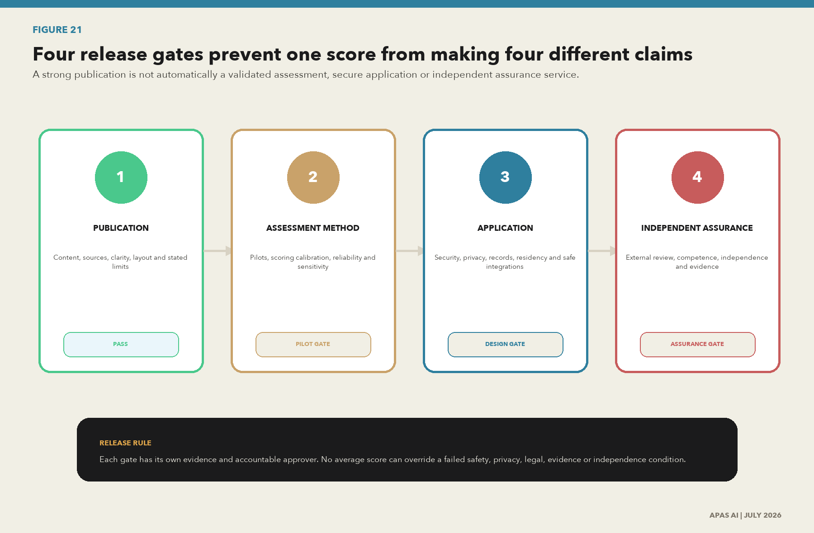
Figure 21. Four release gates prevent one score from making four different claims
What this shows. Publication readiness, assessment-method validation, application security and operational readiness, and independent assurance are separate decisions. Passing one gate does not pass the others.
Source: APAS AI release-governance model.
Gate |
Decision |
Minimum evidence |
Accountable approval |
Publication readiness |
May the paper be published with its stated scope and limits? |
Verified sources, complete references, resolved production defects, accessibility review and change record. |
Publication owner and editorial reviewer. |
Assessment-method validation |
May scores be compared, benchmarked or used without facilitation? |
Diverse pilots, scoring calibration, inter-rater reliability, sensitivity tests, utility overlays and worked examples. |
Method owner with independent technical challenge. |
Application readiness |
May the product accept utility evidence or connect to utility systems? |
Threat model, privacy assessment, records and residency design, supplier controls, safe integration boundary, incident plan and user testing. |
Product, security, privacy, records and utility-operations owners. |
Independent assurance |
May APAS issue certification, compliance or assurance conclusions? |
Defined criteria, competence, independence, sampling, evidence retention, quality controls and external review authority. |
Qualified independent assurance authority. |
Release rule A pass at the publication gate does not pass the method, application or assurance gates. No average score can override a failed safety, privacy, legal, evidence or independence condition. |
The 60 core criteria remain stable, but the critical data, consequence and required evidence must change by utility context. The overlay does not create a separate governance system. It changes the decision samples, operating risks and evidence depth used to test the common system.
Overlay |
Priority decisions |
Critical data and evidence |
Drinking water |
Treatment release, pressure, water quality, source protection and customer notice. |
SCADA and historian context; laboratory custody and method; distribution model; asset condition; permit limits; operator authorization. |
Wastewater and stormwater |
Overflow response, wet-weather operation, collection risk, treatment performance and discharge reporting. |
Rainfall; levels and flows; pump state; sewer model; blockage and FOG work; event timeline; consent or permit evidence. |
Electric |
Switching, outage restoration, load and voltage control, asset health and reliability reporting. |
Network model; telemetry; protection settings; outage and work records; asset hierarchy; NERC applicability; operator and control evidence. |
Multi-utility |
Cross-service customer, emergency, capital, cyber and shared-infrastructure decisions. |
Common asset and location identity; service boundaries; shared suppliers; access segregation; coordinated incident and records evidence. |
Example decision: a wet-weather overflow response. The assessment begins with an asserted maturity of Level 4 because a dashboard, procedure and monthly review exist. The evidence sample shows that one SCADA tag lacks a governed unit, rainfall time is offset by one hour, the spreadsheet transformation has no version record, and operator approval is not linked to the regulatory response.
Measure |
Initial answer |
Evidence result |
Recorded outcome |
Maturity |
4, measured |
The process operates, but critical handoffs are not controlled. |
2, defined. A score cannot exceed Level 2 until recurring evidence supports operation. |
Evidence confidence |
3, operating sample |
Two sources verified, two partial, one missing and one conflicting. |
2, documented. Conflict and missing approval remain visible. |
Consequence |
5 |
Potential service, environmental, regulatory and public-trust harm. |
5. Consequence is not reduced by a lower maturity score. |
Urgency |
4 |
Wet-weather season begins in 45 days. |
4. Fund immediate control correction and a retest. |
Finding |
None |
Authoritative time, transformation version and approval evidence are incomplete. |
High priority. Owner, action, date and closure proof required. |
Missing-evidence rule Absence is recorded as absence. It is not converted into a neutral answer. Conflicting evidence lowers confidence, triggers adjudication and remains linked to the score until resolved. |
Sensitivity testing asks whether a reasonable change in weights or evidence confidence changes the roadmap. If a priority disappears only because one weight changed, the recommendation is unstable and must be challenged before funding.
Scenario |
Maturity weight |
Evidence weight |
Result |
Management interpretation |
Baseline |
50% |
50% |
Overflow evidence chain is Priority 1. |
Act now. |
Practice-heavy |
70% |
30% |
Overflow evidence chain remains Priority 1. |
Priority is stable. |
Evidence-heavy |
30% |
70% |
Overflow evidence chain remains Priority 1 with a larger gap. |
Weak proof increases urgency. |
Critical-failure protection |
Not averaged |
Not averaged |
Missing operator approval forces escalation. |
A critical failure cannot be hidden by strong scores elsewhere. |
Record |
Required fields |
Control purpose |
Data product contract |
Product ID, purpose, owner, consumers, schema, units, source, quality rules, access, rights, lineage, service level, retention and version. |
Makes the approved use and service promise explicit. |
Provenance event |
Event ID, input IDs, output ID, activity, responsible agent, time, code or configuration version, purpose, quality result, approval and integrity evidence. |
Reconstructs what happened, when, why and by whom. |
Control result |
Control ID, design owner, test time, sample, expected result, actual result, exception, reviewer and retained evidence location. |
Shows whether the control operated and what failed. |
Assessment finding |
Finding ID, criterion, sampled decision, evidence state, cause, consequence, owner, action, due date, closure proof and retest result. |
Keeps the score connected to accountable improvement. |
Select at least three utilities that differ in size, ownership, service type and regulatory setting.
Choose the same minimum decision samples and record where an overlay changes the evidence requirement.
Have at least two qualified assessors score the same evidence independently before discussion.
Compare criterion agreement, domain agreement, evidence-confidence agreement and finding severity.
Adjudicate disagreements using the retained evidence and scoring rules, then update examples without hiding the original result.
Run weight and missing-evidence sensitivity tests and publish any change to priority or roadmap sequence.
Approve a benchmark only after the sample, method, limitations and uncertainty are visible and repeatable.
Disclose when the assessor may sell implementation work arising from the assessment.
Allow the utility to challenge a score and retain the evidence, reasoning, decision and resolution.
Keep client evidence portable through exportable records and stable identifiers.
Publish material corrections, affected criteria, reason, approver and effective date.
Retain prior versions so a result can be reconstructed under the method used at the time.
Change |
Reason |
Release effect |
Established Version 2.2 as the canonical baseline and retired the separate Version 1.1 workstream. |
Prevent parallel publications and conflicting claims. |
One publication, one method version and one QA/QC record. |
Added four independent release gates. |
Separate publication quality from method, application and assurance readiness. |
Publication may pass while external validation gates remain open. |
Added utility overlays, a worked assessment and scoring sensitivity test. |
Resolve missing method examples and make uncertainty visible. |
Supports controlled pilots without claiming benchmark validation. |
Added minimum machine-readable records and a calibration protocol. |
Turn the publication into a product and pilot specification. |
Creates implementation-ready companion registries. |
Expanded the ten-lens QA/QC finding register. |
Preserve the strongest adversarial review from the retired workstream. |
Thirty stable findings now control future release decisions. |
Trigger |
Required update |
New or revised standard |
Record edition, status, affected criteria, implementation decision and next review. |
New law, rule or regulator action |
Confirm applicability, effective date, owner, evidence and legal review. |
Material incident or audit finding |
Record the evidence failure, cause, corrective action, retest and lesson. |
New system, supplier or AI use |
Update inventory, data flow, rights, risk, controls, lineage and exit plan. |
Quarterly review |
Recertify priority sources, links, open findings, scores, ownership and roadmap status. |
This application paper is a living professional work. It is designed to support education, assessment, consulting and product development. It does not replace licensed standards, legal advice, regulator direction, certification rules or an independent assurance opinion.
Research verified through 18 July 2026. Next scheduled review: October 2026.
Partnership inquiries: hello@apas.ai | Technical and author contact: hardeep@apas.ai | Access support: access@apas.ai | apas.ai
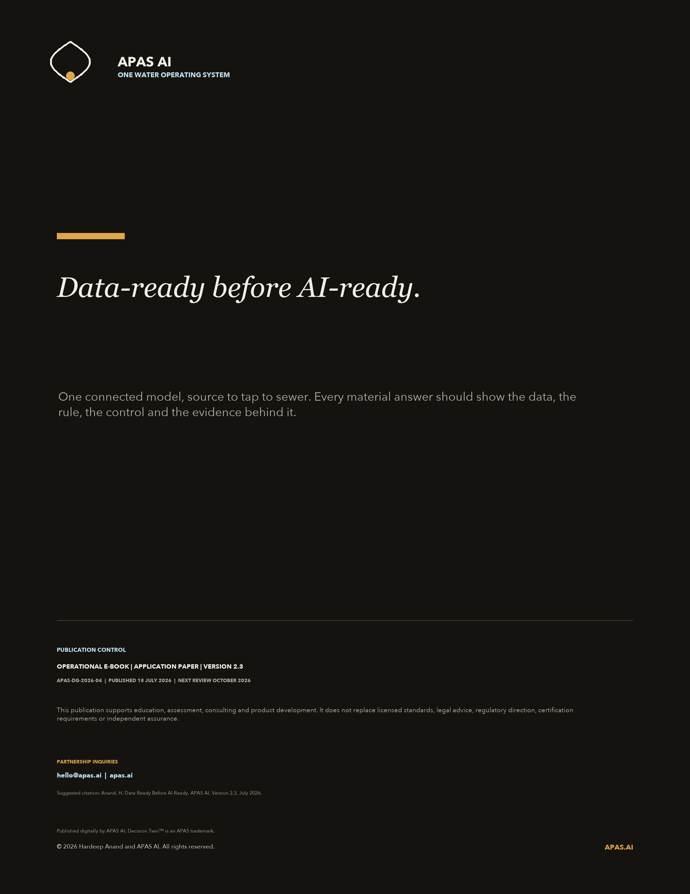